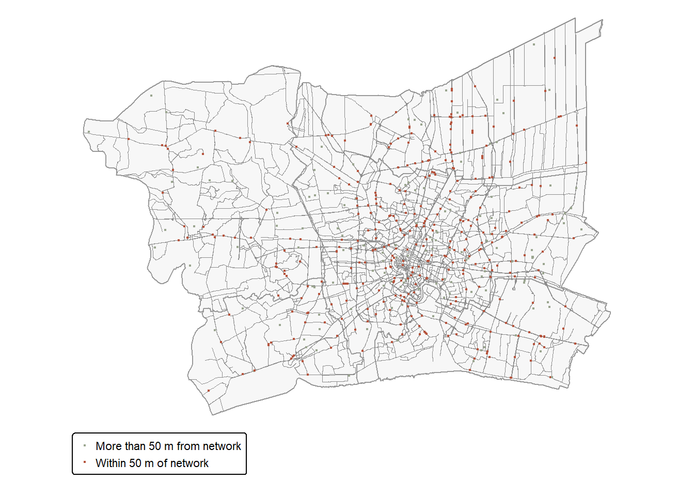
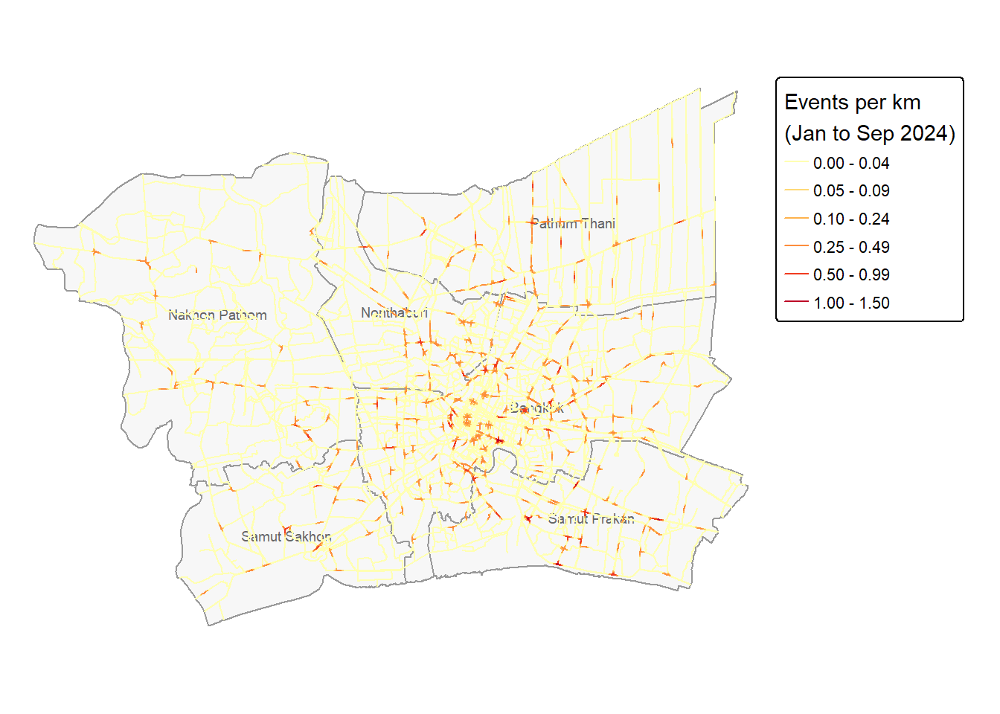
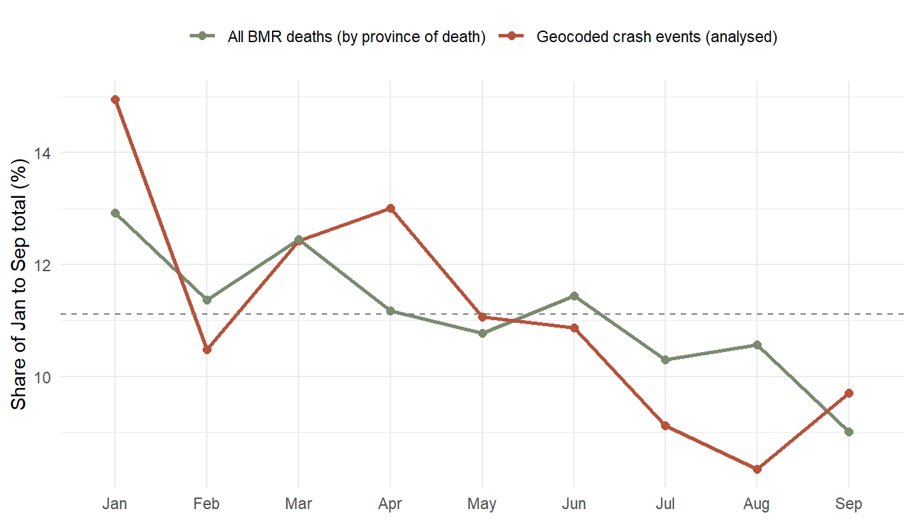
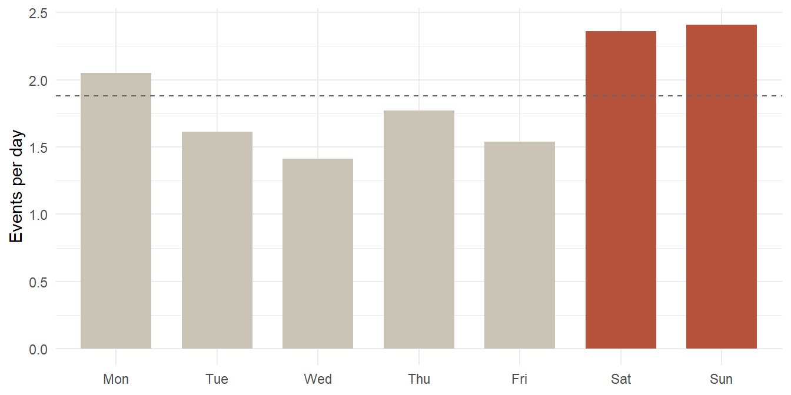
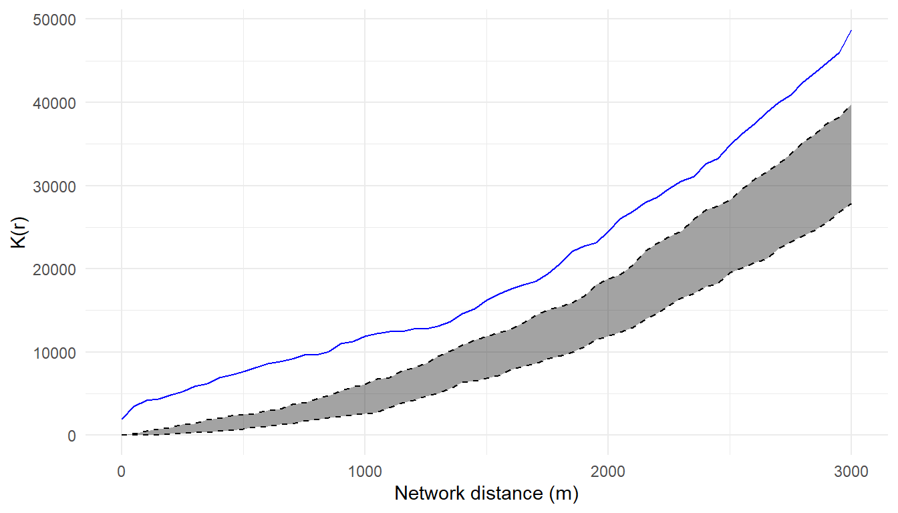
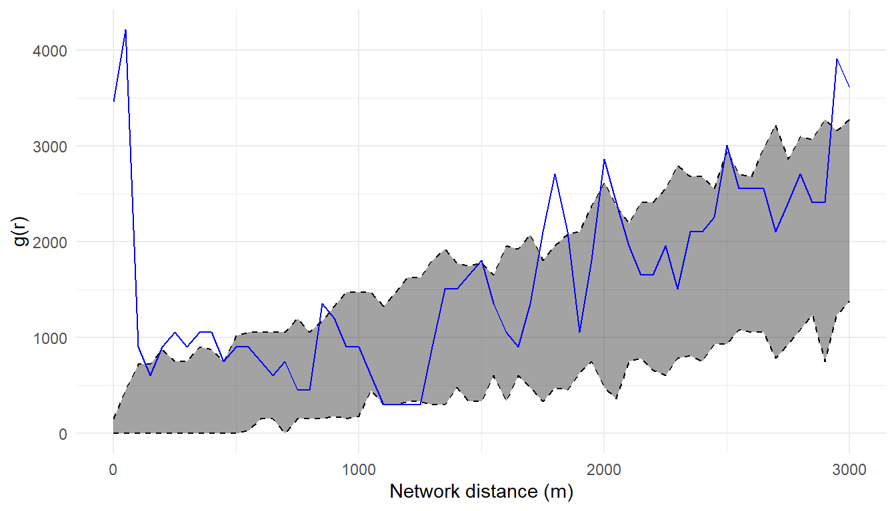
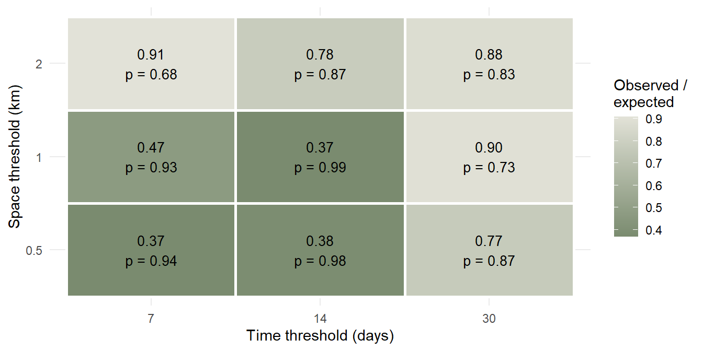

Code
pacman::p_load(sf, tidyverse, lubridate, spNetwork, tmap, knitr)Meng Tingyu
September 26, 2026
September 26, 2026
Road crashes kill thousands of people in Thailand every year, and the Bangkok Metropolitan Region (BMR) is where traffic, population and road infrastructure are most concentrated. In this exercise I use the Thailand Road Accident Fatalities 2024 dataset to study where and when fatal crashes happened in the BMR between January and September 2024, and whether crash locations show any interaction with each other. Crashes happen on roads, so I analyse them on the road network itself, using network kernel density estimation and network K- and G-functions.
I load all packages with pacman::p_load(), which installs anything missing before loading it. sf (Pebesma, 2018) handles vector data, tidyverse (Wickham et al., 2019) and lubridate (Grolemund & Wickham, 2011) handle tables and dates, spNetwork (Gelb, 2021) provides the network point-pattern methods, tmap (Tennekes, 2018) draws the maps and knitr renders the tables. I also call igraph (Csardi & Nepusz, 2006) and sfheaders through their namespaces for a few network-building steps. Both are installed with spNetwork.
The network K-function simulations and the Knox permutations use random numbers. Each of them runs after a set.seed(2024) call, so the results can be reproduced exactly.
| Dataset | Source | Accessed | Coverage | Format | Key characteristics |
|---|---|---|---|---|---|
| Thailand Road Accident Fatalities 2024 | Kaggle, https://www.kaggle.com/datasets/pornsakkamchan/thailand-road-accident-fatalities-2024, compiled by Thailand’s Department of Disease Control from three data sources | 20 September 2026 | Thailand, deaths confirmed 1 Jan to 30 Sep 2024 | CSV, UTF-8, Thai-language values | One row per fatality, 13 variables, crash coordinates for about a quarter of records |
| geoBoundaries Thailand ADM1 (gbOpen) | https://www.geoboundaries.org (Runfola et al., 2020) | 26 September 2026 | Thailand, 77 provinces | GeoJSON, WGS 84 | Province polygons used to build the study window |
| OpenStreetMap roads | Geofabrik, https://download.geofabrik.de/asia/thailand.html (OpenStreetMap contributors, 2026) | 26 September 2026 | Thailand | Shapefile, WGS 84, layer gis_osm_roads_free_1 |
One line per OSM way, road type in fclass, ODbL licence |
The raw OSM shapefile is larger than 1 GB, so it is excluded from the GitHub repository. The code in the road network section rebuilds the clipped road layer from it when the layer is missing.
I read the CSV with read_csv() and check its structure with glimpse(). Several columns hold Thai text, so the file has to be read as UTF-8.
Rows: 12,762
Columns: 13
$ age <dbl> 49, 59, 15, 19, 44, 61, 14, 9, 46, 56, 31, 37, 42…
$ sex <chr> "ชาย", "หญิง", "ชาย", "ชาย", "ชาย", "ชาย", "หญิง", …
$ nationality <chr> NA, NA, NA, NA, NA, NA, NA, NA, NA, NA, NA, NA, N…
$ person_district <chr> "ขนอม", "พล", "บัวเชด", "แม่สอด", "ชานุมาน", "วิเศษชัย…
$ person_province <chr> "นครศรีธรรมราช", "ขอนแก่น", "สุรินทร์", "ตาก", "อำนาจเจ…
$ confirmed_death_date <chr> "11/01/2567", "13/03/2567", "30/06/2567", "02/07/…
$ acc_sub_district <chr> "ขนอม", "เมืองพล", "ละลม", "หางน้ำสาคร", "ป่าก่อ", "ม่ว…
$ acc_district <chr> "ขนอม", "พล", "ภูสิงห์", "เมืองชัยนาท", "ชานุมาน", "เมือ…
$ province_of_death <chr> "นครศรีธรรมราช", "ขอนแก่น", "ศรีสะเกษ", "ชัยนาท", "อำน…
$ acc_lat <dbl> 99.85735, NA, 104.01363, 100.18037, NA, 100.33543…
$ acc_long <dbl> 9.182572, NA, 14.567701, 15.295001, NA, 14.627385…
$ cause_code <chr> "V899", "V031", "V892", "V244", "Y349", "V892", "…
$ vehicle_type <chr> "รถจักรยานยนต์", "คนเดินเท้า", "รถจักรยานยนต์", "รถจักรย…The Thai values only match my lookup tables if both the CSV and this .qmd file are read as UTF-8. R 4.2 and later use UTF-8 on Windows by default. If every translated value comes back as NA, the first thing I check is the encoding of the .qmd file.
I count missing values in every column before cleaning anything, so each later decision can be traced back to a documented problem.
| variable | n_missing | pct_missing |
|---|---|---|
| acc_lat | 9516 | 74.6 |
| acc_long | 9516 | 74.6 |
| nationality | 8410 | 65.9 |
| person_district | 7478 | 58.6 |
| person_province | 7469 | 58.5 |
| acc_sub_district | 6757 | 52.9 |
| cause_code | 1509 | 11.8 |
| age | 93 | 0.7 |
| sex | 0 | 0.0 |
| confirmed_death_date | 0 | 0.0 |
| acc_district | 0 | 0.0 |
| province_of_death | 0 | 0.0 |
| vehicle_type | 0 | 0.0 |
About three quarters of the records have no crash coordinates. This is the largest data-quality problem in the study, and the missingness turns out to be selective, which I show further below.
Thailand lies roughly between 5°N and 21°N and between 97°E and 106°E, so I compare the range of each coordinate column with these bounds.
# A tibble: 1 × 4
acc_lat_min acc_lat_max acc_long_min acc_long_max
<dbl> <dbl> <dbl> <dbl>
1 97.9 106. 5.94 20.4Every value in acc_lat falls between 97 and 106, which in Thailand can only be a longitude, and every value in acc_long falls between 5 and 21. Used as labelled, every point would land far outside the country. I swap the two columns only where acc_lat > 90, a value no latitude can take, so the code would still work on a corrected version of the file.
| pattern_ok | year_values | naive_parse_NAs |
|---|---|---|
| 12762 | 2567 | 35 |
All dates carry the Thai Buddhist Era year 2567, which is 2024 CE. Parsing the strings directly with dmy() fails for the 35 records dated 29/02/2567, because 2567 CE is not a leap year while 2024 CE is. Converting the year before parsing recovers all 35 records.
These rows match in every column, including age, sex, dates and location. Since each row is one death, an identical pair most likely records the same death twice, so I remove them. Records that share a location but differ elsewhere are handled later under the point-event definition.
This pipeline removes the exact duplicates, converts the dates, translates the Thai categories I need and corrects the coordinates.
vehicle_lookup <- c(
"รถจักรยานยนต์" = "Motorcycle",
"ไม่ระบุพาหนะ" = "Unspecified",
"รถยนต์" = "Car",
"คนเดินเท้า" = "Pedestrian",
"รถบรรทุกขนาดเล็ก/รถตู้" = "Pickup / van",
"รถจักรยาน" = "Bicycle",
"รถบรรทุกหนัก" = "Heavy truck",
"รถเพื่อการเกษตร" = "Agricultural vehicle",
"สามล้อ" = "Three-wheeler",
"รถโดยสาร" = "Bus"
)
bmr_lookup <- c(
"กรุงเทพมหานคร" = "Bangkok",
"นนทบุรี" = "Nonthaburi",
"ปทุมธานี" = "Pathum Thani",
"สมุทรปราการ" = "Samut Prakan",
"สมุทรสาคร" = "Samut Sakhon",
"นครปฐม" = "Nakhon Pathom"
)
acc <- acc_raw %>%
distinct() %>%
mutate(
ce_year = as.integer(str_sub(confirmed_death_date, 7, 10)) - 543,
death_date = dmy(paste0(str_sub(confirmed_death_date, 1, 6), ce_year)),
month = month(death_date, label = TRUE, abbr = TRUE, locale = "C"),
sex = recode(sex, "ชาย" = "Male", "หญิง" = "Female"),
vehicle = unname(vehicle_lookup[vehicle_type]),
death_prov_en = unname(bmr_lookup[province_of_death]),
swapped = !is.na(acc_lat) & acc_lat > 90,
lon = if_else(swapped, acc_lat, acc_long),
lat = if_else(swapped, acc_long, acc_lat),
has_xy = !is.na(lon) & !is.na(lat)
)
tibble(
records_after_dedup = nrow(acc),
unparsed_dates = sum(is.na(acc$death_date)),
first_date = min(acc$death_date),
last_date = max(acc$death_date),
coords_swapped = sum(acc$swapped),
untranslated_vehicle = sum(is.na(acc$vehicle)),
coords_outside_thailand = sum(acc$has_xy & !(between(acc$lon, 97, 106) & between(acc$lat, 5, 21)))
) %>% kable()| records_after_dedup | unparsed_dates | first_date | last_date | coords_swapped | untranslated_vehicle | coords_outside_thailand |
|---|---|---|---|---|---|---|
| 12738 | 0 | 2024-01-01 | 2024-09-30 | 3240 | 0 | 0 |
All dates now parse, every vehicle category is translated and every corrected coordinate falls inside Thailand. The observation period runs from 1 January to 30 September 2024, so the data cover nine months of the year.
A pattern built from geocoded records represents all fatalities only if geocoding is unrelated to the crash itself. I check this for deaths recorded in the six BMR provinces, starting with vehicle type.
bmr_deaths <- acc %>%
filter(!is.na(death_prov_en)) %>%
mutate(vehicle_known = vehicle != "Unspecified")
bmr_deaths %>%
count(vehicle, has_xy) %>%
pivot_wider(names_from = has_xy, values_from = n, values_fill = 0,
names_prefix = "xy_") %>%
mutate(total = xy_TRUE + xy_FALSE,
pct_of_all = round(100 * total / sum(total), 1),
pct_of_geocoded = round(100 * xy_TRUE / sum(xy_TRUE), 1)) %>%
select(vehicle, total, geocoded = xy_TRUE, pct_of_all, pct_of_geocoded) %>%
arrange(desc(total)) %>%
kable()| vehicle | total | geocoded | pct_of_all | pct_of_geocoded |
|---|---|---|---|---|
| Motorcycle | 836 | 499 | 56.3 | 94.2 |
| Unspecified | 586 | 16 | 39.4 | 3.0 |
| Car | 37 | 13 | 2.5 | 2.5 |
| Pickup / van | 11 | 0 | 0.7 | 0.0 |
| Pedestrian | 8 | 1 | 0.5 | 0.2 |
| Bicycle | 3 | 1 | 0.2 | 0.2 |
| Bus | 3 | 0 | 0.2 | 0.0 |
| Heavy truck | 1 | 0 | 0.1 | 0.0 |
| Three-wheeler | 1 | 0 | 0.1 | 0.0 |
Deaths with no recorded vehicle stand out, since only 16 of 586 have coordinates. To see whether this comes from the crashes or from the records, I compare how complete the other fields are for these deaths and for deaths with a recorded vehicle.
src_tbl <- bmr_deaths %>%
group_by(record = if_else(vehicle_known, "Vehicle recorded", "No vehicle recorded")) %>%
summarise(deaths = n(),
geocoded = round(100 * mean(has_xy), 1),
no_sub_district = round(100 * mean(is.na(acc_sub_district)), 1),
no_home_province = round(100 * mean(is.na(person_province)), 1),
no_nationality = round(100 * mean(is.na(nationality)), 1),
cause_code_V892 = round(100 * mean(cause_code %in% "V892"), 1))
kable(src_tbl)
unspec_v892 <- src_tbl$cause_code_V892[src_tbl$record == "No vehicle recorded"]| record | deaths | geocoded | no_sub_district | no_home_province | no_nationality | cause_code_V892 |
|---|---|---|---|---|---|---|
| No vehicle recorded | 586 | 2.7 | 92.7 | 95.1 | 93.7 | 91.1 |
| Vehicle recorded | 900 | 57.1 | 10.9 | 21.6 | 20.9 | 36.0 |
Deaths with no recorded vehicle are almost never geocoded, and most of them also lack the sub-district, the person’s home province and the nationality. 91.1% of them carry the ICD-10 cause code V89.2 (World Health Organization, 2019), a person injured in an unspecified motor-vehicle traffic accident, which is the code a death certificate uses when the crash details are unknown. The Kaggle page (pornsakkamchan, 2025) states that the dataset combines three sources compiled by the Department of Disease Control, so these records most likely come from a source that does not collect crash details.
prov_src <- bmr_deaths %>%
group_by(province = death_prov_en) %>%
summarise(deaths = n(),
geocoded_all = round(100 * mean(has_xy), 1),
no_vehicle_recorded = round(100 * mean(!vehicle_known), 1),
geocoded_vehicle_known = round(100 * mean(has_xy[vehicle_known]), 1)) %>%
arrange(desc(deaths))
kable(prov_src)
known_geo_pct <- round(100 * mean(bmr_deaths$has_xy[bmr_deaths$vehicle_known]), 1)
moto_known <- round(100 * mean(bmr_deaths$vehicle[bmr_deaths$vehicle_known] == "Motorcycle"), 1)
moto_geo <- round(100 * mean(bmr_deaths$vehicle[bmr_deaths$vehicle_known & bmr_deaths$has_xy] == "Motorcycle"), 1)
unspec_share <- round(100 * mean(!bmr_deaths$vehicle_known), 1)| province | deaths | geocoded_all | no_vehicle_recorded | geocoded_vehicle_known |
|---|---|---|---|---|
| Bangkok | 512 | 45.5 | 28.7 | 63.0 |
| Pathum Thani | 278 | 29.1 | 44.6 | 51.9 |
| Samut Prakan | 203 | 35.0 | 24.6 | 45.1 |
| Nakhon Pathom | 202 | 25.7 | 52.5 | 51.0 |
| Nonthaburi | 148 | 35.8 | 58.1 | 82.3 |
| Samut Sakhon | 143 | 28.0 | 51.0 | 50.0 |
Among deaths with a recorded vehicle, 57.1% are geocoded. Motorcyclists make up 92.9% of these deaths and 97.1% of the geocoded ones, so the geocoded pattern has a vehicle mix close to that of all deaths with a known vehicle, and in practice it describes fatal motorcycle crashes.
The share of deaths from the source without crash details ranges from 24.6% to 58.1% across provinces, and this explains much of the gap in raw geocoding rates, though not all of it, since Samut Prakan has the lowest share of these records and still a lower raw rate than Bangkok. Among deaths with a recorded vehicle, Nonthaburi is geocoded most often and Bangkok second. Bangkok has a lower share of these records than four of the five surrounding provinces, so more of its deaths carry coordinates, which inflates its intensity relative to the fringe. I carry this into the interpretations below.
The assignment names the “Bangkok Greater Metropolitan Area” without fixing a boundary. I use the Bangkok Metropolitan Region, the six-province area of Bangkok, Nonthaburi, Pathum Thani, Samut Prakan, Samut Sakhon and Nakhon Pathom that Thai government agencies use for metropolitan planning and statistics (Wikipedia contributors, 2026). It follows official boundaries, can be rebuilt from a public dataset and covers the continuous built-up and commuter area around the capital.
valid
TRUE
77 bmr <- adm1 %>%
filter(str_detect(shapeName, regex(
"Bangkok|Krung Thep|Nonthaburi|Pathum ?Thani|Samut Prak|Samut Sakhon|Nakhon Pathom",
ignore_case = TRUE))) %>%
st_make_valid() %>%
st_transform(32647) %>%
mutate(province = case_when(
str_detect(shapeName, regex("Bangkok|Krung Thep", ignore_case = TRUE)) ~ "Bangkok",
str_detect(shapeName, regex("Nonthaburi", ignore_case = TRUE)) ~ "Nonthaburi",
str_detect(shapeName, regex("Pathum ?Thani", ignore_case = TRUE)) ~ "Pathum Thani",
str_detect(shapeName, regex("Samut Prak", ignore_case = TRUE)) ~ "Samut Prakan",
str_detect(shapeName, regex("Samut Sakhon", ignore_case = TRUE)) ~ "Samut Sakhon",
str_detect(shapeName, regex("Nakhon Pathom", ignore_case = TRUE)) ~ "Nakhon Pathom"
)) %>%
select(province)
stopifnot(nrow(bmr) == 6, !anyNA(bmr$province))
bmr_union <- bmr %>% st_union() %>% st_make_valid()
bmr_area_km2 <- round(as.numeric(st_area(bmr_union)) / 1e6)
bmr_area_km2[1] 7604The dissolved boundary covers 7,604 km², close to the 7,681 km² usually reported for the region, which confirms that the filter picked up the right six provinces.
In this geoBoundaries release Bangkok is stored as “Bangkok” while the other provinces carry a suffix, as in “Nonthaburi Province”, and other sources use spellings such as “Bangkok Metropolis” or “Samut Prakarn”. I match the names with flexible regular expressions and then standardise them. The stopifnot() line stops the render if the filter returns anything other than six provinces.
I project every layer to WGS 84 / UTM zone 47N (EPSG:32647). The BMR sits between about 99.9°E and 101.0°E, inside zone 47 (96°E to 102°E), so distortion is small. Kernel density, nearest-neighbour distances and K-functions all depend on distance, and they need coordinates in metres.
I turn the geocoded records into an sf point layer, project it and keep the points that fall inside the BMR polygon. The filter uses the point geometry, since province_of_death records where the person died, and that can be a different province from the crash.
[1] 530st_filter() keeps the points that intersect the BMR. st_join() with st_nearest_feature attaches exactly one province to each point, so a point lying on a shared provincial border does not get duplicated.
acc_sf %>%
st_join(bmr, join = st_intersects) %>%
st_drop_geometry() %>%
filter(!is.na(death_prov_en) | !is.na(province)) %>%
mutate(status = case_when(
!is.na(death_prov_en) & is.na(province) ~ "Died in BMR, crash point outside BMR",
is.na(death_prov_en) & !is.na(province) ~ "Crash point in BMR, died outside BMR",
death_prov_en == province ~ "Same province",
TRUE ~ "Different BMR province"
)) %>%
count(status) %>%
kable()| status | n |
|---|---|
| Crash point in BMR, died outside BMR | 2 |
| Died in BMR, crash point outside BMR | 2 |
| Different BMR province | 4 |
| Same province | 524 |
Most crash points fall in the same province as the recorded death. The handful of cross-boundary cases fits the idea of injured people being taken to hospitals in a neighbouring province, and it supports filtering by geometry.
Each row in the data is a death. A crash that kills two people produces two rows at identical coordinates, and treating them as two events would place a pair of points at zero distance. Second-order summaries such as the K-function would read that as clustering at the smallest scales.
I define the point event as a fatal crash location. I approximate it by merging deaths that share both the exact coordinates and the date of death, and I keep the number of deaths as a mark (n_deaths).
xy <- st_coordinates(acc_bmr)
events <- acc_bmr %>%
st_drop_geometry() %>%
mutate(x = xy[, 1], y = xy[, 2]) %>%
group_by(x, y, death_date) %>%
summarise(n_deaths = n(),
vehicle = paste(sort(unique(vehicle)), collapse = " + "),
province = first(province),
month = first(month),
.groups = "drop") %>%
st_as_sf(coords = c("x", "y"), crs = 32647, remove = FALSE)
tibble(n_events = nrow(events),
n_multi_fatality_events = sum(events$n_deaths > 1),
n_colocated_events_remaining = sum(duplicated(st_coordinates(events)))) %>%
kable()| n_events | n_multi_fatality_events | n_colocated_events_remaining |
|---|---|---|
| 515 | 15 | 12 |
[1] 18 39 40 41 48 70 83 86 89 98 123 123 169 170Two deaths at the same point on the same date are treated as one crash. This could merge two separate crashes at one blackspot on the same day, which I expect to be rare. If one victim died several days after the others, the same crash stays as two events at one location. The remaining co-located events (same coordinates, different dates) could be repeat crashes at a blackspot or coordinates snapped to a default point during geocoding. The data give no way to tell these apart, so I keep them as separate events.
The co-located events also give a check on the second risk. If split crashes were common, co-located events would sit only a few days apart. Of the 14 pairs of events at identical coordinates, 0 are within 7 days of each other and 1 within 30 days, with gaps from 18 to 170 days. At most 1 crash can have been split this way.
The temporal window is 1 January to 30 September 2024, the full period in the data. The only date available is the date of confirmed death, which I use as a proxy for the crash date. For deaths at the scene the two are the same. For deaths after a hospital stay the crash happened earlier, which matters for daily analysis and much less for monthly totals, so the month is the finest unit I interpret with confidence.
The OSM layer holds about 590,000 lines inside the BMR, and most of them are residential lanes and service roads. I first measured how far each crash event lies from two candidate networks. Within 50 m of the major roads (motorway, trunk, primary, secondary and tertiary, with their link roads) lie 72.6% of events, with a median distance of 4.9 m. Within 50 m of all roads open to motor vehicles lie 96.9%, with a median of 2.8 m. I ran this comparison once on the full OSM file before clipping, so these two figures can differ slightly from the share computed below on the clipped network. The code below keeps only the step that builds the major road layer.
I use the major road network. Adding residential and service roads would multiply the network about fifteen times, and the network K-function simulations would no longer finish in reasonable time. The cost is that about a quarter of the events sit on smaller roads and fall outside the analysis, which I report below and carry into the limitations.
major_classes <- c("motorway", "motorway_link", "trunk", "trunk_link",
"primary", "primary_link", "secondary", "secondary_link",
"tertiary", "tertiary_link")
roads_gpkg <- "data/raw/bmr_roads_major.gpkg"
if (!file.exists(roads_gpkg)) {
bmr_wkt <- bmr_union %>% st_transform(4326) %>% st_bbox() %>%
st_as_sfc() %>% st_as_text()
st_read("data/raw/osm/gis_osm_roads_free_1.shp",
wkt_filter = bmr_wkt, quiet = TRUE) %>%
st_transform(32647) %>%
st_filter(bmr_union) %>%
filter(fclass %in% major_classes) %>%
select(osm_id, fclass, name, oneway) %>%
st_write(roads_gpkg, quiet = TRUE)
}
roads <- st_read(roads_gpkg, quiet = TRUE)
roads %>% st_drop_geometry() %>% count(fclass, sort = TRUE) %>% kable()| fclass | n |
|---|---|
| secondary | 7339 |
| primary | 6272 |
| tertiary | 5723 |
| primary_link | 2455 |
| secondary_link | 2074 |
| motorway_link | 1720 |
| trunk | 1464 |
| motorway | 1267 |
| trunk_link | 668 |
| tertiary_link | 425 |
I clip the major roads to the BMR boundary. spNetwork builds its graph from the two end points of each line, while OSM roads usually cross at a junction vertex in the middle of both lines. Left as they are, most crossing roads would count as unconnected, and network distances would be far too long. I split every line at each vertex it shares with another line, so that every junction becomes a line end.
roads_bmr <- roads %>%
st_intersection(bmr_union) %>%
st_cast("MULTILINESTRING") %>%
st_cast("LINESTRING")
roads_bmr <- roads_bmr[as.numeric(st_length(roads_bmr)) > 0, ]
split_at_junctions <- function(lines) {
vx <- as_tibble(st_coordinates(lines)) %>%
rename(line = L1) %>%
mutate(key = paste(round(X, 2), round(Y, 2))) %>%
group_by(line) %>%
mutate(pos = row_number(), last = pos == n()) %>%
ungroup() %>%
add_count(key, name = "uses") %>%
mutate(junction = pos == 1 | last | uses > 1) %>%
group_by(line) %>%
mutate(seg = cumsum(junction)) %>%
ungroup()
pieces <- bind_rows(vx %>% filter(!last),
vx %>% filter(junction, pos > 1) %>% mutate(seg = seg - 1)) %>%
arrange(line, seg, pos) %>%
mutate(piece = paste(line, seg, sep = "_"))
out <- sfheaders::sf_linestring(pieces, x = "X", y = "Y", linestring_id = "piece")
st_crs(out) <- st_crs(lines)
idx <- as.integer(sub("_.*", "", out$piece))
out$fclass <- lines$fclass[idx]
out$oneway <- lines$oneway[idx]
out
}
network_all <- split_at_junctions(roads_bmr)spNetwork has simple_lines() and simplify_network() for this job, but on this network the second step was still running after ten minutes. My split_at_junctions() function does the same repair in a few seconds. It lists every vertex, marks vertices that are line ends or that appear in more than one line, and cuts each line at the marked vertices. graph_checking() from spNetwork found the same number of disconnected parts as my own check below, which confirms that the repair works. The chunk below shows that check. I set it not to run during rendering because it takes about two minutes.
A network distance between two events exists only if they sit on connected parts of the network. I build a graph from the segment end points with igraph and keep the largest connected part.
node_key <- function(m) paste(round(m[, "X"], 2), round(m[, "Y"], 2))
cc <- st_coordinates(network_all)
first_pt <- cc[!duplicated(cc[, "L1"]), ]
last_pt <- cc[!duplicated(cc[, "L1"], fromLast = TRUE), ]
g_all <- igraph::graph_from_data_frame(
data.frame(from = node_key(first_pt), to = node_key(last_pt)), directed = FALSE)
comp <- igraph::components(g_all)
main_comp <- which.max(comp$csize)
network_all$component <- comp$membership[node_key(first_pt)]
network <- network_all %>% filter(component == main_comp)
network$length <- as.numeric(st_length(network))
net_summary <- tibble(
osm_lines_clipped = nrow(roads_bmr),
segments = nrow(network_all),
components = comp$no,
km_all = round(sum(as.numeric(st_length(network_all))) / 1000),
km_main = round(sum(network$length) / 1000),
pct_nodes_main = round(100 * max(comp$csize) / sum(comp$csize), 1)
)
kable(net_summary)| osm_lines_clipped | segments | components | km_all | km_main | pct_nodes_main |
|---|---|---|---|---|---|
| 29409 | 36760 | 24 | 10534 | 10489 | 99.7 |
The repaired network has 36,760 segments in 24 disconnected parts. The largest part holds 99.7% of the nodes and 10,489 km of road, and the other parts are short pieces such as isolated ramps and roads cut off by the boundary.
I attach each event to its nearest network segment and keep events within 50 m. The tolerance covers geocoding error and the width of large roads with frontage lanes, which can put a crash 20 to 40 m from the OSM centre line. An event further away most likely happened on a smaller road, and forcing it onto a major road would place it on the wrong segment.
nearest_edge <- st_nearest_feature(events, network)
events$snap_dist <- as.numeric(st_distance(events, network[nearest_edge, ], by_element = TRUE))
events$road_class <- network$fclass[nearest_edge]
ev <- events %>% filter(snap_dist <= 50)
snap_tbl <- events %>%
st_drop_geometry() %>%
group_by(province) %>%
summarise(events = n(),
on_network = sum(snap_dist <= 50),
pct_on_network = round(100 * mean(snap_dist <= 50), 1),
median_snap_m = round(median(snap_dist), 1)) %>%
arrange(desc(events))
kable(snap_tbl)
pct_on <- function(prov) snap_tbl$pct_on_network[snap_tbl$province == prov]| province | events | on_network | pct_on_network | median_snap_m |
|---|---|---|---|---|
| Bangkok | 227 | 156 | 68.7 | 5.6 |
| Pathum Thani | 77 | 64 | 83.1 | 4.1 |
| Samut Prakan | 69 | 56 | 81.2 | 3.7 |
| Nonthaburi | 53 | 38 | 71.7 | 5.5 |
| Nakhon Pathom | 51 | 34 | 66.7 | 4.7 |
| Samut Sakhon | 38 | 26 | 68.4 | 6.9 |
374 of 515 events (72.6%) lie within 50 m of the network. The share is highest in Pathum Thani (83.1%) and Samut Prakan (81.2%) and lowest in Nakhon Pathom (66.7%), Samut Sakhon (68.4%) and Bangkok (68.7%). The median snapping distance of the kept events is only a few metres, so the kept events sit on the road they are attached to.
tibble(
step = c("Raw records",
"After removing exact duplicates",
"With valid crash coordinates",
"Crash point inside the BMR",
"Fatal crash events (deaths collapsed)",
"Events within 50 m of the major road network"),
n = c(nrow(acc_raw), nrow(acc), sum(acc$has_xy), nrow(acc_bmr),
nrow(events), nrow(ev))
) %>% kable()| step | n |
|---|---|
| Raw records | 12762 |
| After removing exact duplicates | 12738 |
| With valid crash coordinates | 3240 |
| Crash point inside the BMR | 530 |
| Fatal crash events (deaths collapsed) | 515 |
| Events within 50 m of the major road network | 374 |
events_map <- events %>%
mutate(status = if_else(snap_dist <= 50, "Within 50 m of network",
"More than 50 m from network"))
tmap_mode("plot")
tm_shape(bmr) +
tm_polygons(fill = "grey97", col = "grey60") +
tm_shape(network) +
tm_lines(col = "grey55", lwd = 0.6) +
tm_shape(events_map) +
tm_dots(fill = "status",
fill.scale = tm_scale_categorical(values = c("#9AA58F", "#B5533C")),
fill.legend = tm_legend(title = ""),
size = 0.15) +
tm_layout(frame = FALSE)
The major road network forms a dense grid across Bangkok and a sparser set of corridors in Nakhon Pathom, Samut Sakhon and eastern Pathum Thani. Terracotta dots are the 374 events within 50 m of a major road, and sage dots are the 141 events further away. Between 31% and 33% of events in Bangkok, Nakhon Pathom and Samut Sakhon fall off the network, against 17% in Pathum Thani and 19% in Samut Prakan, so the analysed pattern under-represents events far from major roads in the first three provinces. The map shows geocoded events only, and the record-source gap from Section 2.5 applies on top of this.
The swapped coordinates, the 29 February dates and a row unit that counts deaths would each have broken the analysis without an error message. The road network added a fourth problem of the same kind, since OSM roads cross without ending at junctions and the network would have been mostly disconnected.
First-order properties describe how the intensity of fatal crashes varies across the study area. On a network, intensity means the expected number of events per km of road. Planar kernel density spreads each crash over fields, canals and buildings, while network kernel density estimation (NKDE) spreads it only along the roads it could have happened on, so the result reads as crashes per km of road (Okabe & Sugihara, 2012).
NKDE estimates density at sample points along the network. I cut the network into lixels (linear pixels) of 200 m, merging any leftover piece shorter than 100 m into its neighbour, and use the centre of each lixel as its sample point.
Four choices shape the estimate.
I tried likelihood cross-validation with bw_cv_likelihood_calc() over bandwidths from 250 m to 3 km.
[1] 1 bw cv_scores
1 250 -641.3264
2 500 -578.1718
3 750 -539.1838
4 1000 -494.6884
5 1500 -427.9175
6 2000 -362.9002
7 3000 -230.9652The score rises at every step and peaks at the widest candidate, so the procedure gives no interior optimum. Many events have no other event within a few hundred metres of network distance, so their leave-one-out density is zero unless the bandwidth is very wide. By default bw_cv_likelihood_calc() replaces a zero density with the smallest positive number the computer can store (zero_strat = "min_double"), which gives a huge penalty to every narrow bandwidth and pushes the score towards the widest candidate. A 3 km kernel would smear each crash over whole districts, which hides the road-segment detail a planning agency needs. I set the bandwidth to 1 km, about the length of a typical block between major junctions, and test 500 m and 2 km for sensitivity.
nkde() returns a density that integrates to one over the network. I multiply it by the number of events and by 1,000 to express intensity in events per km over the nine months.
bw_nkde <- 1000
run_nkde <- function(bw) {
d <- nkde(network, events = ev, w = rep(1, nrow(ev)), samples = samples,
kernel_name = "quartic", bw = bw, div = "bw", method = "simple",
digits = 1, tol = 1, grid_shape = c(1, 1), max_depth = 8,
agg = 5, sparse = TRUE, verbose = FALSE)
d * nrow(ev) * 1000
}
lixels$len_km <- as.numeric(st_length(lixels)) / 1000
lixels$intensity <- run_nkde(bw_nkde)
tibble(bandwidth_m = bw_nkde,
max_per_km = round(max(lixels$intensity), 3),
mass_on_network = round(sum(lixels$intensity * lixels$len_km), 1),
events = nrow(ev)) %>% kable()| bandwidth_m | max_per_km | mass_on_network | events |
|---|---|---|---|
| 1000 | 1.401 | 272.5 | 374 |
sens_bws <- c(bw_nkde / 2, bw_nkde * 2)
lixels$intensity_narrow <- run_nkde(sens_bws[1])
lixels$intensity_wide <- run_nkde(sens_bws[2])
top5 <- function(x) x >= quantile(x, 0.95)
nkde_sens <- tibble(
bandwidth_m = c(sens_bws[1], bw_nkde, sens_bws[2]),
max_per_km = round(c(max(lixels$intensity_narrow), max(lixels$intensity),
max(lixels$intensity_wide)), 3),
cor_with_main = round(c(cor(lixels$intensity_narrow, lixels$intensity), 1,
cor(lixels$intensity_wide, lixels$intensity)), 2),
top5_overlap_pct = round(100 * c(mean(top5(lixels$intensity_narrow)[top5(lixels$intensity)]), 1,
mean(top5(lixels$intensity_wide)[top5(lixels$intensity)])), 1)
)
kable(nkde_sens)| bandwidth_m | max_per_km | cor_with_main | top5_overlap_pct |
|---|---|---|---|
| 500 | 5.581 | 0.82 | 89.8 |
| 1000 | 1.401 | 1.00 | 100.0 |
| 2000 | 0.358 | 0.78 | 50.5 |
Halving the bandwidth to 500 m keeps the hotspots in place. Its surface correlates at 0.82 with the 1 km surface, and 89.8% of the top 5% of lixels under 1 km are also in the top 5% under 500 m. Doubling it to 2 km spreads the hotspots out, and the overlap falls to 50.5%. The location of the main hotspots is stable at the fine end of the range and becomes more diffuse as the kernel widens.
| bandwidth_m | mass_ratio |
|---|---|
| 500 | 1.12 |
| 1000 | 0.73 |
| 2000 | 0.55 |
loss_pct <- round(100 * (1 - mass_tbl$mass_ratio[2]))
lx_sorted <- lixels %>%
st_drop_geometry() %>%
arrange(desc(intensity)) %>%
mutate(cum_len = cumsum(len_km) / sum(len_km),
cum_mass = cumsum(intensity * len_km) / sum(intensity * len_km))
len_half <- lx_sorted$cum_len[which(lx_sorted$cum_mass >= 0.5)[1]]
len_zero <- mean(lixels$intensity == 0)
top_lx <- lixels %>% filter(intensity >= quantile(intensity, 0.95))
top_prov <- st_join(st_centroid(top_lx), bmr["province"]) %>% st_drop_geometry()
top5_bkk <- round(100 * mean(top_prov$province == "Bangkok"))
top5_primsec <- round(100 * mean(str_detect(top_lx$fclass, "primary|secondary")))The mass ratio compares the estimated intensity summed over the network with the number of events. Two effects pull in opposite directions under the simple method. The full kernel is copied onto every branch at a junction, which adds mass, and the kernel runs off the network at dead ends and at the BMR boundary, which removes it. The ratio falls from 1.12 at 500 m to 0.55 at 2000 m, since a wider kernel reaches the boundary and dead ends more often. At 1 km the loss outweighs the gain, so the intensities are about 27% too low overall, and segments near the boundary are pulled down more than central ones. I use the values to compare segments away from the boundary.
nkde_breaks <- c(0, 0.05, 0.1, 0.25, 0.5, 1, ceiling(max(lixels$intensity) * 10) / 10)
tm_shape(bmr) +
tm_polygons(fill = "grey97", col = "grey60") +
tm_text("province", size = 0.6, col = "grey40") +
tm_shape(arrange(lixels, intensity)) +
tm_lines(col = "intensity",
col.scale = tm_scale_intervals(values = "brewer.yl_or_rd",
style = "fixed", breaks = nkde_breaks),
col.legend = tm_legend(title = "Events per km\n(Jan to Sep 2024)"),
lwd = 1.3) +
tm_layout(frame = FALSE)
Fatal crash intensity is highest on a dense cluster of segments in central Bangkok and on shorter hotspots spread along major corridors, including a north-south corridor in Pathum Thani and several roads in Samut Prakan. At this bandwidth 83% of the network length has zero intensity. Among the top 5% of lixels, 49% lie in Bangkok and most of the rest in Samut Prakan, Pathum Thani and Nonthaburi, and 73% are on primary and secondary roads. The values are relative, since the simple method loses about 27% of the kernel mass and more near the boundary. The map also covers only crashes within 50 m of a major road, and Bangkok has the largest share of crashes on smaller roads.
| pct_length_holding_half_mass | pct_length_zero_intensity |
|---|---|
| 3.1 | 83.1 |
Half of the estimated intensity lies on 3.1% of the network length, and 83.1% of the network length has zero intensity at a 1 km bandwidth. Fatal crashes on major roads concentrate on a small share of the network.
The NKDE shows where crashes concentrate, while a simple rate per 100 km of road shows how intensity varies between road classes and provinces once network length is taken into account.
class_group <- function(fc) case_when(
str_detect(fc, "motorway|trunk") ~ "Motorway and trunk",
str_detect(fc, "primary") ~ "Primary",
str_detect(fc, "secondary") ~ "Secondary",
TRUE ~ "Tertiary"
)
by_class <- network %>%
st_drop_geometry() %>%
group_by(group = class_group(fclass)) %>%
summarise(km = sum(length) / 1000,
km_centre = sum(length * if_else(oneway %in% c("F", "T"), 0.5, 1)) / 1000) %>%
left_join(ev %>% st_drop_geometry() %>% count(group = class_group(road_class), name = "events"),
by = "group") %>%
mutate(level = "Road class")
net_prov <- st_intersection(network, bmr) %>%
mutate(km = as.numeric(st_length(.)) / 1000) %>%
st_drop_geometry() %>%
group_by(group = province) %>%
summarise(km_centre = sum(km * if_else(oneway %in% c("F", "T"), 0.5, 1)),
km = sum(km))
by_prov <- net_prov %>%
left_join(ev %>% st_drop_geometry() %>% count(group = province, name = "events"),
by = "group") %>%
mutate(level = "Province")
rate_tbl <- bind_rows(by_class, by_prov) %>%
mutate(events = replace_na(events, 0),
events_per_100km = round(100 * events / km, 1),
per_100km_centre = round(100 * events / km_centre, 1),
km = round(km),
km_centre = round(km_centre)) %>%
select(level, group, km, km_centre, events, events_per_100km, per_100km_centre)
kable(rate_tbl)
rate <- function(g, col = "events_per_100km") rate_tbl[[col]][rate_tbl$group == g]
raw_geo <- function(p) prov_src$geocoded_all[prov_src$province == p]| level | group | km | km_centre | events | events_per_100km | per_100km_centre |
|---|---|---|---|---|---|---|
| Road class | Motorway and trunk | 2125 | 1065 | 54 | 2.5 | 5.1 |
| Road class | Primary | 2357 | 1220 | 128 | 5.4 | 10.5 |
| Road class | Secondary | 2856 | 1894 | 137 | 4.8 | 7.2 |
| Road class | Tertiary | 3152 | 2975 | 55 | 1.7 | 1.8 |
| Province | Bangkok | 4099 | 2581 | 156 | 3.8 | 6.0 |
| Province | Nakhon Pathom | 1623 | 1251 | 34 | 2.1 | 2.7 |
| Province | Nonthaburi | 1164 | 792 | 38 | 3.3 | 4.8 |
| Province | Pathum Thani | 1666 | 1210 | 64 | 3.8 | 5.3 |
| Province | Samut Prakan | 1217 | 794 | 56 | 4.6 | 7.1 |
| Province | Samut Sakhon | 720 | 528 | 26 | 3.6 | 4.9 |
Primary roads have the highest rate at 5.4 fatal crash events per 100 km of mapped line, followed by secondary roads at 4.8, and motorways, trunk and tertiary roads have lower rates. OSM draws most motorways, trunk roads and primary roads as two one-way lines, so the mapped length double counts divided roads. Counting one-way lines at half length raises every rate, most of all on divided roads, and the order of road classes stays the same. By province, Samut Prakan has the highest rate under both measures, at 4.6 and 7.1, against 3.8 and 6 for Bangkok. Samut Prakan’s raw geocoding rate is lower than Bangkok’s (35% against 45.5%), so geocoding bias works against it. These rates count crashes per km and do not measure risk per vehicle.
The temporal charts use all 515 geocoded events in the BMR, since timing does not depend on the road network.
I compare the monthly distribution of the geocoded events with that of all BMR deaths. Plotting each series as a share of its own nine-month total shows whether the analysed subset has the same seasonal shape as the full record, even though it holds only about a third of the deaths.
monthly <- bind_rows(
events %>% st_drop_geometry() %>% count(month) %>%
mutate(series = "Geocoded crash events (analysed)"),
acc %>% filter(!is.na(death_prov_en)) %>% count(month) %>%
mutate(series = "All BMR deaths (by province of death)")
) %>%
group_by(series) %>%
mutate(share = 100 * n / sum(n)) %>%
ungroup()
ggplot(monthly, aes(month, share, colour = series, group = series)) +
geom_line(linewidth = 1) +
geom_point(size = 2) +
geom_hline(yintercept = 100 / 9, linetype = "dashed", colour = "grey50") +
scale_colour_manual(values = c("#7A8B6F", "#B5533C")) +
labs(x = NULL, y = "Share of Jan to Sep total (%)", colour = NULL) +
theme_minimal(base_size = 11) +
theme(legend.position = "top")
geo_m <- monthly %>% filter(str_detect(series, "Geocoded"))
peak_month <- as.character(geo_m$month[which.max(geo_m$n)])
low_month <- as.character(geo_m$month[which.min(geo_m$n)])
Both series peak in Jan and drift downward into the wet season, and the geocoded events reach their lowest count in Aug. The dashed line marks an even spread of one ninth per month. The two series follow a similar shape, so the geocoded subset does not seem to distort the seasonal pattern, and I trust this result more than the province comparison. With 43 to 77 events a month, a difference of a few events between neighbouring months is within ordinary Poisson variation, so I only read the broad downward drift. The data stop in September, so the last quarter of the year is unknown.
The nine-month window has 40 Mondays and 39 of every other weekday, so I compare events per day. The null model spreads events across weekdays in proportion to how many of each weekday the window contains. I number weekdays with lubridate starting from Monday, since weekdays() returns labels in the system language.
dow_labels <- c("Mon", "Tue", "Wed", "Thu", "Fri", "Sat", "Sun")
all_days <- seq(as.Date("2024-01-01"), as.Date("2024-09-30"), by = "day")
days_avail <- tabulate(wday(all_days, week_start = 1), nbins = 7)
dow <- events %>%
st_drop_geometry() %>%
mutate(dow = wday(death_date, week_start = 1)) %>%
count(dow) %>%
complete(dow = 1:7, fill = list(n = 0)) %>%
mutate(days = days_avail,
per_day = n / days,
dow_lab = factor(dow_labels[dow], levels = dow_labels),
weekend = dow >= 6)
dow_test <- chisq.test(dow$n, p = dow$days / sum(dow$days))
ggplot(dow, aes(dow_lab, per_day, fill = weekend)) +
geom_col(width = 0.7) +
geom_hline(yintercept = sum(dow$n) / sum(dow$days), linetype = "dashed", colour = "grey40") +
scale_fill_manual(values = c(`FALSE` = "#C9C3B6", `TRUE` = "#B5533C"), guide = "none") +
labs(x = NULL, y = "Events per day") +
theme_minimal(base_size = 11)
weekend_ratio <- with(dow, (sum(n[weekend]) / sum(days[weekend])) /
(sum(n[!weekend]) / sum(days[!weekend])))
Saturdays and Sundays have the most fatal crash events per day, and the weekend daily rate is 1.42 times the weekday rate. A chi-square test against the proportional null gives p = 0.0029, so random fluctuation alone is an unlikely explanation. The date is the date of death, and deaths after a hospital stay are shifted later than the crash, which blurs the weekday signal and could move part of it.
Measuring intensity per km of road changed how I read the map. Bangkok has the most fatal crashes, but Samut Prakan has more per km of major road.
Second-order analysis asks whether fatal crashes sit closer to each other along the network than a random pattern would produce.
Research question. I test whether fatal crash events on the major road network are clustered, regular or random at network distances up to 3 km.
I use kfunctions() from spNetwork, which computes the network K-function of Okabe and Yamada (2001) and a network G-function. The K-function counts, for each event, the other events within network distance r, and it grows as r grows. The G-function in spNetwork counts events in a ring between r and r plus the ring width, so it shows at which distances events are more common than expected.
The null model is complete spatial randomness on the network, where the same number of events is placed independently and uniformly along the road length. The comparison assumes that under the null every km of road is equally likely to receive a crash. Section 3 showed that this is far from true, so part of any clustering found here reflects uneven intensity and part may reflect interaction. OSM also draws divided roads as two lines, so the null model gives these roads about twice the weight of an undivided road. spNetwork has no inhomogeneous version of the network K-function. spatstat.linnet offers one through linearKinhom(), which I leave for further work, so I read the K-function mainly as a description and rely on the G-function for the scale of the excess.

The observed K-function lies above the envelope at 61 of the 61 distances from 0 to 3 km. At 1 km the observed value is 2.0 times the upper edge of the envelope. Fatal crashes have more neighbours along the network than a uniform random pattern would give at all scales examined. This fits the uneven intensity found in Section 3, where half of the intensity sits on 3.1% of the road length, and on its own it does not show that crashes interact.
kfun$plotg +
labs(title = NULL, x = "Network distance (m)", y = "g(r)") +
theme_minimal(base_size = 11)
g_above <- k_vals$distances[k_vals$obs_g > k_vals$upper_g]
g_below <- k_vals$distances[k_vals$obs_g < k_vals$lower_g]
short <- k_vals$distances <= 400
g_short_above <- sum(k_vals$obs_g[short] > k_vals$upper_g[short])
g_short_rings <- sum(short)
g_far_above <- sum(k_vals$obs_g[!short] > k_vals$upper_g[!short])
g_far_below <- sum(k_vals$obs_g[!short] < k_vals$lower_g[!short])
g_far_rings <- sum(!short)
The G-function lies above the envelope in 8 of the 9 rings up to 400 m, so fatal crashes are much more common than expected within a few hundred metres of each other along the road. Beyond 400 m the curve crosses the upper edge at 10 and the lower edge at 2 of 52 distances, mostly in brief runs. A pointwise 95% envelope would give about 5% crossings by chance, so this points to a much weaker and less consistent excess at the corridor scale. The excess at 0 m also includes the co-located events at identical coordinates. Uneven intensity along roads could still produce part of this short-range excess, since crash-prone segments hold several crashes each.
The K-function stays above its envelope at every distance, which on its own says little, since network CSR ignores where roads carry traffic. The G-function was more useful, because it shows that the excess sits within about 400 m.
The G-function shows that fatal crashes sit close to each other along the road within about 400 m. That could come from fixed locations where crashes keep happening over the months, or from short bursts where one crash is followed by another nearby within days. Persistent locations point to engineering fixes at specific sites, and short bursts point to temporary enforcement after a crash. None of the methods above can tell these apart, since the K- and G-functions ignore time.
I compute the network distance between every pair of events. I cut the network into 50 m pieces with lixelize_lines(), build a weighted graph of their end points with igraph and attach each event to the nearer end of its nearest piece, which puts it within 25 m of its snapped position. igraph::distances() then gives the shortest-path distance between every pair.
lx50 <- lixelize_lines(network, 50, mindist = 25)
c50 <- st_coordinates(lx50)
f50 <- c50[!duplicated(c50[, "L1"]), ]
l50 <- c50[!duplicated(c50[, "L1"], fromLast = TRUE), ]
g50 <- igraph::graph_from_data_frame(
data.frame(from = node_key(f50), to = node_key(l50),
weight = as.numeric(st_length(lx50))), directed = FALSE)
near50 <- st_nearest_feature(ev, lx50)
ev_xy <- st_coordinates(ev)
d_first <- sqrt((ev_xy[, 1] - f50[near50, "X"])^2 + (ev_xy[, 2] - f50[near50, "Y"])^2)
d_last <- sqrt((ev_xy[, 1] - l50[near50, "X"])^2 + (ev_xy[, 2] - l50[near50, "Y"])^2)
ev_node <- if_else(d_first <= d_last,
node_key(f50[near50, , drop = FALSE]),
node_key(l50[near50, , drop = FALSE]))
nodes_u <- unique(ev_node)
D <- igraph::distances(g50, v = nodes_u, to = nodes_u)
net_d <- D[ev_node, ev_node] / 1000
nd_ratio <- round(median((net_d / (as.matrix(dist(ev_xy)) / 1000))[upper.tri(net_d)], na.rm = TRUE), 2)
tibble(pairs = nrow(ev) * (nrow(ev) - 1) / 2,
unreachable = sum(is.infinite(net_d[upper.tri(net_d)])),
median_network_km = round(median(net_d[upper.tri(net_d)]), 1),
median_ratio_to_straight = round(median((net_d / (as.matrix(dist(ev_xy)) / 1000))[upper.tri(net_d)], na.rm = TRUE), 2)) %>%
kable()| pairs | unreachable | median_network_km | median_ratio_to_straight |
|---|---|---|---|
| 69751 | 0 | 37.9 | 1.2 |
All pairs are connected, and the median ratio of network to straight-line distance is 1.2, so travel along the road adds about 20% to a typical straight-line gap between two crash sites.
I use the Knox test (Knox, 1964), which counts pairs of events that are close in both network distance and time. The null model keeps every location and the full set of dates fixed and randomly shuffles the dates among the events. This controls for both the spatial pattern and the seasonal pattern, so an excess of close pairs can only come from space and time acting together.
I set the thresholds in advance at 0.5, 1 and 2 km of network distance and 7, 14 and 30 days, which spans the 400 m scale of the G-function excess and gaps from one week to one month. Each cell uses 999 permutations, and the test is one-sided, since the question is whether close pairs are more common than expected. I wrote the Knox functions myself with base R and purrr. Nine cells mean nine tests, so a single cell below 0.05 would be weak evidence. Deaths at the same point on the same date were merged into one event, so the observed data contain no pair at zero distance and zero days, while shuffled dates could create one. With so few co-located events this adds well under one pair to each expected count.
doy <- yday(ev$death_date)
upper <- upper.tri(net_d)
space_d <- net_d[upper]
thresholds <- expand_grid(space_km = c(0.5, 1, 2), time_days = c(7, 14, 30))
knox_counts <- function(days) {
time_d <- abs(outer(days, days, "-"))[upper]
map2_int(thresholds$space_km, thresholds$time_days,
~ sum(space_d <= .x & time_d <= .y))
}
set.seed(2024)
n_perm <- 999
knox_obs <- knox_counts(doy)
knox_sim <- replicate(n_perm, knox_counts(sample(doy)))
knox_res <- thresholds %>%
mutate(observed = knox_obs,
expected = round(rowMeans(knox_sim), 1),
ratio = round(observed / expected, 2),
p_value = (1 + rowSums(knox_sim >= knox_obs)) / (n_perm + 1),
p_lower = (1 + rowSums(knox_sim <= knox_obs)) / (n_perm + 1))
kable(knox_res)| space_km | time_days | observed | expected | ratio | p_value | p_lower |
|---|---|---|---|---|---|---|
| 0.5 | 7 | 1 | 2.7 | 0.37 | 0.942 | 0.237 |
| 0.5 | 14 | 2 | 5.2 | 0.38 | 0.979 | 0.087 |
| 0.5 | 30 | 8 | 10.4 | 0.77 | 0.866 | 0.244 |
| 1.0 | 7 | 2 | 4.3 | 0.47 | 0.928 | 0.188 |
| 1.0 | 14 | 3 | 8.1 | 0.37 | 0.989 | 0.029 |
| 1.0 | 30 | 15 | 16.6 | 0.90 | 0.730 | 0.382 |
| 2.0 | 7 | 8 | 8.8 | 0.91 | 0.675 | 0.484 |
| 2.0 | 14 | 13 | 16.7 | 0.78 | 0.870 | 0.207 |
| 2.0 | 30 | 30 | 34.2 | 0.88 | 0.827 | 0.247 |
ggplot(knox_res, aes(factor(time_days), factor(space_km), fill = ratio)) +
geom_tile(colour = "white", linewidth = 1) +
geom_text(aes(label = sprintf("%.2f\np = %.2f", ratio, p_value)), size = 3.5) +
scale_fill_gradient2(low = "#7A8B6F", mid = "#F4F1EA", high = "#B5533C",
midpoint = 1) +
labs(x = "Time threshold (days)", y = "Space threshold (km)",
fill = "Observed /\nexpected") +
theme_minimal(base_size = 11)
No combination of thresholds shows more close pairs than expected. The observed-to-expected ratio ranges from 0.37 to 0.91, and the smallest one-sided p-value is 0.675. The cell with the smallest lower-tail p, at 1 km and 14 days, has fewer close pairs than expected (p = 0.029), but it rests on 3 pairs and is one cell out of nine, so I do not read it as avoidance. Fatal crashes that happen near each other on the network are spread across the nine months without bunching in time, which fits persistent crash locations. The death date can lag the crash by days, which blurs the 7-day threshold most.
The NKDE shows fatal crashes concentrated on a small share of the major road network, with half of the intensity on 3.1% of the road length. Per km of road, primary and secondary roads have the highest rates, and Samut Prakan has a higher rate than Bangkok whether divided roads are counted once or twice. The network K-function confirms that crashes have more neighbours along the road than a uniform pattern would give at every distance, and the G-function places the clearest excess within about 400 m. The Knox test adds that nearby crashes do not bunch within days or weeks of each other.
The three views agree on one picture. Fatal crashes on major roads cluster on particular stretches of road, and the lack of space-time interaction fits stretches that keep producing crashes over the months.
The NKDE hotspots are stable between 500 m and 1 km and spread out at 2 km, so the hotspot locations depend on the bandwidth only at the wide end of the range tested. The likelihood cross-validation gave no interior optimum, so the 1 km choice rests on the planning scale and on this stability check.
The network K- and G-functions use 49 simulations and a pointwise envelope. The short-range G-function excess covers 8 of the 9 rings up to 400 m, far more than chance crossings would give. The crossings beyond 400 m are fewer and come in brief runs, and fewer simulations or a different seed could move them, so I read them as weak evidence of corridor-scale excess.
The 50 m snapping tolerance decides which events enter the analysis. A wider tolerance would pull more crashes from local roads onto major roads and place them on the wrong segments, and a narrower one would drop crashes on wide roads with frontage lanes.
Several explanations other than crash interaction fit the short-range clustering.
I kept the maps and charts in one colour scheme that matches the rest of my site, terracotta for observed values and sage for reference values. The NKDE map uses a sequential yellow-to-red palette with fixed class breaks, since most of the network has zero or near-zero intensity and quantile breaks would collapse. I draw the lixels in order of intensity, so the high-intensity segments sit on top of the low ones and stay visible.
The monthly chart shows shares of each series total, since the two series differ in size by a factor of three. The K- and G-function plots keep the layout from spNetwork, with the observed curve over the simulation envelope, and I relabelled the axes in metres of network distance.
Each major figure has an interpretation box of no more than 150 words next to it. Each box states what the figure shows, the evidence from the figure or test behind it and the main caveat.
Fatal crashes on the major road network concentrate on a small share of road length, with half of the estimated intensity on 3.1% of it. This supports targeting road audits, enforcement and ambulance coverage at a short list of road stretches, and the NKDE map gives a first version of that list. The hotspots stay in place between 500 m and 1 km bandwidths, so the list does not depend on a narrow technical choice.
Per km of road, primary and secondary roads have the highest fatal crash rates, and Samut Prakan has a higher rate than Bangkok under both ways of counting divided roads. Planning that allocates resources by crash counts would favour Bangkok, while planning by crashes per km of road would give Samut Prakan and the arterial roads of Pathum Thani a larger share.
Within about 400 m, fatal crashes sit closer together along the road than a random pattern predicts, and nearby crashes are spread across the nine months without bunching in time. This fits persistent crash sites, which call for engineering measures at those sites, such as junction redesign, safer crossings, lighting and speed management. A temporary police presence after each fatal crash fits the evidence less well, since the Knox test found no sign that one crash is followed by another nearby within days.
Weekends have about 42% more fatal crash events per day than weekdays, which supports stronger weekend enforcement and ambulance staffing. The exact crash time is not in the data, so the hours to target remain open.
Motorcyclists make up 92.9% of BMR deaths with a recorded vehicle and 97.1% of the geocoded ones, so these results describe fatal motorcycle crashes and support focusing effort on motorcyclists in the identified stretches.
Crashes per km of road do not measure risk. Turning the rates into risk needs traffic volumes by segment, and without them I cannot say whether a hotspot is dangerous per trip or simply busy.
About a quarter of the geocoded crashes lie more than 50 m from a major road and are left out of this analysis. Deaths from the record source without crash details have no location at all, and linking them to the police records that hold the crash location would close that second gap.
Choosing between measures such as helmet enforcement, speed control or junction redesign needs data on helmet use, speed, alcohol and road design at each site. The dataset records none of these, so I make no claims about why crashes happen where they do.
---
title: "Take-home Exercise 1: Spatial and Spatio-temporal Patterns of Road Traffic Fatalities in the Bangkok Metropolitan Region, 2024"
author: "Meng Tingyu"
date: "26 September 2026"
date-modified: "last-modified"
format:
html:
toc: true
toc-depth: 3
number-sections: true
code-fold: true
code-tools: true
execute:
echo: true
eval: true
warning: false
message: false
---
# Introduction
Road crashes kill thousands of people in Thailand every year, and the Bangkok Metropolitan Region (BMR) is where traffic, population and road infrastructure are most concentrated. In this exercise I use the Thailand Road Accident Fatalities 2024 dataset to study where and when fatal crashes happened in the BMR between January and September 2024, and whether crash locations show any interaction with each other. Crashes happen on roads, so I analyse them on the road network itself, using network kernel density estimation and network K- and G-functions.
## Research questions
1. How does the intensity of fatal crashes vary across the BMR and across the months of the observation period?
2. Do fatal crash locations cluster, repel or behave randomly along the road network, and at what network distances?
3. Do fatal crashes that occur close together in space also occur close together in time?
4. What do these patterns mean for road-safety planning in the BMR, and where does the evidence stop?
# Data and Study Design
## Getting started
I load all packages with `pacman::p_load()`, which installs anything missing before loading it. `sf` (Pebesma, 2018) handles vector data, `tidyverse` (Wickham et al., 2019) and `lubridate` (Grolemund & Wickham, 2011) handle tables and dates, `spNetwork` (Gelb, 2021) provides the network point-pattern methods, `tmap` (Tennekes, 2018) draws the maps and `knitr` renders the tables. I also call `igraph` (Csardi & Nepusz, 2006) and `sfheaders` through their namespaces for a few network-building steps. Both are installed with `spNetwork`.
The network K-function simulations and the Knox permutations use random numbers. Each of them runs after a `set.seed(2024)` call, so the results can be reproduced exactly.
```{r}
#| label: setup
pacman::p_load(sf, tidyverse, lubridate, spNetwork, tmap, knitr)
```
## Data sources
| Dataset | Source | Accessed | Coverage | Format | Key characteristics |
|---|---|---|---|---|---|
| Thailand Road Accident Fatalities 2024 | Kaggle, <https://www.kaggle.com/datasets/pornsakkamchan/thailand-road-accident-fatalities-2024>, compiled by Thailand's Department of Disease Control from three data sources | 20 September 2026 | Thailand, deaths confirmed 1 Jan to 30 Sep 2024 | CSV, UTF-8, Thai-language values | One row per fatality, 13 variables, crash coordinates for about a quarter of records |
| geoBoundaries Thailand ADM1 (gbOpen) | <https://www.geoboundaries.org> (Runfola et al., 2020) | 26 September 2026 | Thailand, 77 provinces | GeoJSON, WGS 84 | Province polygons used to build the study window |
| OpenStreetMap roads | Geofabrik, <https://download.geofabrik.de/asia/thailand.html> (OpenStreetMap contributors, 2026) | 26 September 2026 | Thailand | Shapefile, WGS 84, layer `gis_osm_roads_free_1` | One line per OSM way, road type in `fclass`, ODbL licence |
: Core datasets {#tbl-sources}
The raw OSM shapefile is larger than 1 GB, so it is excluded from the GitHub repository. The code in the road network section rebuilds the clipped road layer from it when the layer is missing.
## Importing the fatality data
I read the CSV with `read_csv()` and check its structure with `glimpse()`. Several columns hold Thai text, so the file has to be read as UTF-8.
```{r}
#| label: import-acc
acc_raw <- read_csv("data/raw/thailand_road_accident_fatalities_2024.csv",
show_col_types = FALSE)
glimpse(acc_raw)
```
::: {.callout-warning}
## Pitfall: Thai text and file encoding
The Thai values only match my lookup tables if both the CSV and this `.qmd` file are read as UTF-8. R 4.2 and later use UTF-8 on Windows by default. If every translated value comes back as `NA`, the first thing I check is the encoding of the `.qmd` file.
:::
## Data quality assessment
### Missing values
I count missing values in every column before cleaning anything, so each later decision can be traced back to a documented problem.
```{r}
#| label: tbl-missing
#| tbl-cap: "Missing values by variable (raw data)"
missing_tbl <- acc_raw %>%
summarise(across(everything(), ~ sum(is.na(.x)))) %>%
pivot_longer(everything(), names_to = "variable", values_to = "n_missing") %>%
mutate(pct_missing = round(100 * n_missing / nrow(acc_raw), 1)) %>%
arrange(desc(n_missing))
kable(missing_tbl)
```
About three quarters of the records have no crash coordinates. This is the largest data-quality problem in the study, and the missingness turns out to be selective, which I show further below.
### Coordinate validity
Thailand lies roughly between 5°N and 21°N and between 97°E and 106°E, so I compare the range of each coordinate column with these bounds.
```{r}
#| label: check-coords
acc_raw %>%
filter(!is.na(acc_lat)) %>%
summarise(across(c(acc_lat, acc_long), list(min = min, max = max)))
```
::: {.callout-warning}
## Pitfall: latitude and longitude are swapped
Every value in `acc_lat` falls between 97 and 106, which in Thailand can only be a longitude, and every value in `acc_long` falls between 5 and 21. Used as labelled, every point would land far outside the country. I swap the two columns only where `acc_lat > 90`, a value no latitude can take, so the code would still work on a corrected version of the file.
:::
### Dates in the Buddhist Era
```{r}
#| label: check-dates
tibble(
pattern_ok = sum(str_detect(acc_raw$confirmed_death_date, "^\\d{2}/\\d{2}/\\d{4}$")),
year_values = paste(unique(str_sub(acc_raw$confirmed_death_date, 7, 10)), collapse = ", "),
naive_parse_NAs = sum(is.na(dmy(acc_raw$confirmed_death_date, quiet = TRUE)))
) %>% kable()
```
::: {.callout-warning}
## Pitfall: Buddhist Era years and 29 February
All dates carry the Thai Buddhist Era year 2567, which is 2024 CE. Parsing the strings directly with `dmy()` fails for the 35 records dated 29/02/2567, because 2567 CE is not a leap year while 2024 CE is. Converting the year before parsing recovers all 35 records.
:::
### Duplicate records
```{r}
#| label: check-dups
n_exact_dup <- sum(duplicated(acc_raw))
n_exact_dup
```
These rows match in every column, including age, sex, dates and location. Since each row is one death, an identical pair most likely records the same death twice, so I remove them. Records that share a location but differ elsewhere are handled later under the point-event definition.
## Cleaning and deriving variables
This pipeline removes the exact duplicates, converts the dates, translates the Thai categories I need and corrects the coordinates.
```{r}
#| label: clean
vehicle_lookup <- c(
"รถจักรยานยนต์" = "Motorcycle",
"ไม่ระบุพาหนะ" = "Unspecified",
"รถยนต์" = "Car",
"คนเดินเท้า" = "Pedestrian",
"รถบรรทุกขนาดเล็ก/รถตู้" = "Pickup / van",
"รถจักรยาน" = "Bicycle",
"รถบรรทุกหนัก" = "Heavy truck",
"รถเพื่อการเกษตร" = "Agricultural vehicle",
"สามล้อ" = "Three-wheeler",
"รถโดยสาร" = "Bus"
)
bmr_lookup <- c(
"กรุงเทพมหานคร" = "Bangkok",
"นนทบุรี" = "Nonthaburi",
"ปทุมธานี" = "Pathum Thani",
"สมุทรปราการ" = "Samut Prakan",
"สมุทรสาคร" = "Samut Sakhon",
"นครปฐม" = "Nakhon Pathom"
)
acc <- acc_raw %>%
distinct() %>%
mutate(
ce_year = as.integer(str_sub(confirmed_death_date, 7, 10)) - 543,
death_date = dmy(paste0(str_sub(confirmed_death_date, 1, 6), ce_year)),
month = month(death_date, label = TRUE, abbr = TRUE, locale = "C"),
sex = recode(sex, "ชาย" = "Male", "หญิง" = "Female"),
vehicle = unname(vehicle_lookup[vehicle_type]),
death_prov_en = unname(bmr_lookup[province_of_death]),
swapped = !is.na(acc_lat) & acc_lat > 90,
lon = if_else(swapped, acc_lat, acc_long),
lat = if_else(swapped, acc_long, acc_lat),
has_xy = !is.na(lon) & !is.na(lat)
)
tibble(
records_after_dedup = nrow(acc),
unparsed_dates = sum(is.na(acc$death_date)),
first_date = min(acc$death_date),
last_date = max(acc$death_date),
coords_swapped = sum(acc$swapped),
untranslated_vehicle = sum(is.na(acc$vehicle)),
coords_outside_thailand = sum(acc$has_xy & !(between(acc$lon, 97, 106) & between(acc$lat, 5, 21)))
) %>% kable()
```
All dates now parse, every vehicle category is translated and every corrected coordinate falls inside Thailand. The observation period runs from 1 January to 30 September 2024, so the data cover nine months of the year.
### Checking whether missing locations are random
A pattern built from geocoded records represents all fatalities only if geocoding is unrelated to the crash itself. I check this for deaths recorded in the six BMR provinces, starting with vehicle type.
```{r}
#| label: tbl-geocode-vehicle
#| tbl-cap: "Vehicle composition of all BMR fatalities versus geocoded BMR fatalities"
bmr_deaths <- acc %>%
filter(!is.na(death_prov_en)) %>%
mutate(vehicle_known = vehicle != "Unspecified")
bmr_deaths %>%
count(vehicle, has_xy) %>%
pivot_wider(names_from = has_xy, values_from = n, values_fill = 0,
names_prefix = "xy_") %>%
mutate(total = xy_TRUE + xy_FALSE,
pct_of_all = round(100 * total / sum(total), 1),
pct_of_geocoded = round(100 * xy_TRUE / sum(xy_TRUE), 1)) %>%
select(vehicle, total, geocoded = xy_TRUE, pct_of_all, pct_of_geocoded) %>%
arrange(desc(total)) %>%
kable()
```
Deaths with no recorded vehicle stand out, since only `r sum(bmr_deaths$has_xy & !bmr_deaths$vehicle_known)` of `r sum(!bmr_deaths$vehicle_known)` have coordinates. To see whether this comes from the crashes or from the records, I compare how complete the other fields are for these deaths and for deaths with a recorded vehicle.
```{r}
#| label: tbl-record-source
#| tbl-cap: "Completeness of other fields for BMR deaths with and without a recorded vehicle (%)"
src_tbl <- bmr_deaths %>%
group_by(record = if_else(vehicle_known, "Vehicle recorded", "No vehicle recorded")) %>%
summarise(deaths = n(),
geocoded = round(100 * mean(has_xy), 1),
no_sub_district = round(100 * mean(is.na(acc_sub_district)), 1),
no_home_province = round(100 * mean(is.na(person_province)), 1),
no_nationality = round(100 * mean(is.na(nationality)), 1),
cause_code_V892 = round(100 * mean(cause_code %in% "V892"), 1))
kable(src_tbl)
unspec_v892 <- src_tbl$cause_code_V892[src_tbl$record == "No vehicle recorded"]
```
Deaths with no recorded vehicle are almost never geocoded, and most of them also lack the sub-district, the person's home province and the nationality. `r unspec_v892`% of them carry the ICD-10 cause code V89.2 (World Health Organization, 2019), a person injured in an unspecified motor-vehicle traffic accident, which is the code a death certificate uses when the crash details are unknown. The Kaggle page (pornsakkamchan, 2025) states that the dataset combines three sources compiled by the Department of Disease Control, so these records most likely come from a source that does not collect crash details.
```{r}
#| label: tbl-geocode-province
#| tbl-cap: "Geocoding by province of death, for all deaths and for deaths with a recorded vehicle (%)"
prov_src <- bmr_deaths %>%
group_by(province = death_prov_en) %>%
summarise(deaths = n(),
geocoded_all = round(100 * mean(has_xy), 1),
no_vehicle_recorded = round(100 * mean(!vehicle_known), 1),
geocoded_vehicle_known = round(100 * mean(has_xy[vehicle_known]), 1)) %>%
arrange(desc(deaths))
kable(prov_src)
known_geo_pct <- round(100 * mean(bmr_deaths$has_xy[bmr_deaths$vehicle_known]), 1)
moto_known <- round(100 * mean(bmr_deaths$vehicle[bmr_deaths$vehicle_known] == "Motorcycle"), 1)
moto_geo <- round(100 * mean(bmr_deaths$vehicle[bmr_deaths$vehicle_known & bmr_deaths$has_xy] == "Motorcycle"), 1)
unspec_share <- round(100 * mean(!bmr_deaths$vehicle_known), 1)
```
::: {.callout-important}
## Geocoding follows the record source
Among deaths with a recorded vehicle, `r known_geo_pct`% are geocoded. Motorcyclists make up `r moto_known`% of these deaths and `r moto_geo`% of the geocoded ones, so the geocoded pattern has a vehicle mix close to that of all deaths with a known vehicle, and in practice it describes fatal motorcycle crashes.
The share of deaths from the source without crash details ranges from `r min(prov_src$no_vehicle_recorded)`% to `r max(prov_src$no_vehicle_recorded)`% across provinces, and this explains much of the gap in raw geocoding rates, though not all of it, since Samut Prakan has the lowest share of these records and still a lower raw rate than Bangkok. Among deaths with a recorded vehicle, Nonthaburi is geocoded most often and Bangkok second. Bangkok has a lower share of these records than four of the five surrounding provinces, so more of its deaths carry coordinates, which inflates its intensity relative to the fringe. I carry this into the interpretations below.
:::
## Spatial study window
### Defining the Bangkok Metropolitan Region
The assignment names the "Bangkok Greater Metropolitan Area" without fixing a boundary. I use the Bangkok Metropolitan Region, the six-province area of Bangkok, Nonthaburi, Pathum Thani, Samut Prakan, Samut Sakhon and Nakhon Pathom that Thai government agencies use for metropolitan planning and statistics (Wikipedia contributors, 2026). It follows official boundaries, can be rebuilt from a public dataset and covers the continuous built-up and commuter area around the capital.
```{r}
#| label: boundary
adm1 <- st_read("data/raw/geoBoundaries-THA-ADM1.geojson", quiet = TRUE)
table(valid = st_is_valid(adm1))
bmr <- adm1 %>%
filter(str_detect(shapeName, regex(
"Bangkok|Krung Thep|Nonthaburi|Pathum ?Thani|Samut Prak|Samut Sakhon|Nakhon Pathom",
ignore_case = TRUE))) %>%
st_make_valid() %>%
st_transform(32647) %>%
mutate(province = case_when(
str_detect(shapeName, regex("Bangkok|Krung Thep", ignore_case = TRUE)) ~ "Bangkok",
str_detect(shapeName, regex("Nonthaburi", ignore_case = TRUE)) ~ "Nonthaburi",
str_detect(shapeName, regex("Pathum ?Thani", ignore_case = TRUE)) ~ "Pathum Thani",
str_detect(shapeName, regex("Samut Prak", ignore_case = TRUE)) ~ "Samut Prakan",
str_detect(shapeName, regex("Samut Sakhon", ignore_case = TRUE)) ~ "Samut Sakhon",
str_detect(shapeName, regex("Nakhon Pathom", ignore_case = TRUE)) ~ "Nakhon Pathom"
)) %>%
select(province)
stopifnot(nrow(bmr) == 6, !anyNA(bmr$province))
bmr_union <- bmr %>% st_union() %>% st_make_valid()
bmr_area_km2 <- round(as.numeric(st_area(bmr_union)) / 1e6)
bmr_area_km2
```
The dissolved boundary covers `r format(bmr_area_km2, big.mark = ",")` km², close to the 7,681 km² usually reported for the region, which confirms that the filter picked up the right six provinces.
::: {.callout-warning}
## Pitfall: province names in geoBoundaries
In this geoBoundaries release Bangkok is stored as "Bangkok" while the other provinces carry a suffix, as in "Nonthaburi Province", and other sources use spellings such as "Bangkok Metropolis" or "Samut Prakarn". I match the names with flexible regular expressions and then standardise them. The `stopifnot()` line stops the render if the filter returns anything other than six provinces.
:::
### Coordinate reference system
I project every layer to WGS 84 / UTM zone 47N (EPSG:32647). The BMR sits between about 99.9°E and 101.0°E, inside zone 47 (96°E to 102°E), so distortion is small. Kernel density, nearest-neighbour distances and K-functions all depend on distance, and they need coordinates in metres.
## Converting to spatial objects and filtering to the study window
I turn the geocoded records into an `sf` point layer, project it and keep the points that fall inside the BMR polygon. The filter uses the point geometry, since `province_of_death` records where the person died, and that can be a different province from the crash.
```{r}
#| label: to-sf
acc_sf <- acc %>%
filter(has_xy) %>%
st_as_sf(coords = c("lon", "lat"), crs = 4326, remove = FALSE) %>%
st_transform(32647)
acc_bmr <- acc_sf %>%
st_filter(bmr_union) %>%
st_join(bmr, join = st_nearest_feature)
nrow(acc_bmr)
```
`st_filter()` keeps the points that intersect the BMR. `st_join()` with `st_nearest_feature` attaches exactly one province to each point, so a point lying on a shared provincial border does not get duplicated.
```{r}
#| label: tbl-province-consistency
#| tbl-cap: "Consistency between the recorded province of death and the province in which the crash point falls"
acc_sf %>%
st_join(bmr, join = st_intersects) %>%
st_drop_geometry() %>%
filter(!is.na(death_prov_en) | !is.na(province)) %>%
mutate(status = case_when(
!is.na(death_prov_en) & is.na(province) ~ "Died in BMR, crash point outside BMR",
is.na(death_prov_en) & !is.na(province) ~ "Crash point in BMR, died outside BMR",
death_prov_en == province ~ "Same province",
TRUE ~ "Different BMR province"
)) %>%
count(status) %>%
kable()
```
Most crash points fall in the same province as the recorded death. The handful of cross-boundary cases fits the idea of injured people being taken to hospitals in a neighbouring province, and it supports filtering by geometry.
## Point event definition
Each row in the data is a death. A crash that kills two people produces two rows at identical coordinates, and treating them as two events would place a pair of points at zero distance. Second-order summaries such as the K-function would read that as clustering at the smallest scales.
I define the point event as a fatal crash location. I approximate it by merging deaths that share both the exact coordinates and the date of death, and I keep the number of deaths as a mark (`n_deaths`).
```{r}
#| label: events
xy <- st_coordinates(acc_bmr)
events <- acc_bmr %>%
st_drop_geometry() %>%
mutate(x = xy[, 1], y = xy[, 2]) %>%
group_by(x, y, death_date) %>%
summarise(n_deaths = n(),
vehicle = paste(sort(unique(vehicle)), collapse = " + "),
province = first(province),
month = first(month),
.groups = "drop") %>%
st_as_sf(coords = c("x", "y"), crs = 32647, remove = FALSE)
tibble(n_events = nrow(events),
n_multi_fatality_events = sum(events$n_deaths > 1),
n_colocated_events_remaining = sum(duplicated(st_coordinates(events)))) %>%
kable()
ev_dist <- as.matrix(dist(st_coordinates(events)))
ev_days <- abs(outer(as.numeric(events$death_date), as.numeric(events$death_date), "-"))
same_spot_gaps <- sort(ev_days[upper.tri(ev_days)][ev_dist[upper.tri(ev_dist)] == 0])
same_spot_gaps
```
::: {.callout-note}
## Assumptions behind this event definition
Two deaths at the same point on the same date are treated as one crash. This could merge two separate crashes at one blackspot on the same day, which I expect to be rare. If one victim died several days after the others, the same crash stays as two events at one location. The remaining co-located events (same coordinates, different dates) could be repeat crashes at a blackspot or coordinates snapped to a default point during geocoding. The data give no way to tell these apart, so I keep them as separate events.
The co-located events also give a check on the second risk. If split crashes were common, co-located events would sit only a few days apart. Of the `r length(same_spot_gaps)` pairs of events at identical coordinates, `r sum(same_spot_gaps <= 7)` are within 7 days of each other and `r sum(same_spot_gaps <= 30)` within 30 days, with gaps from `r min(same_spot_gaps)` to `r max(same_spot_gaps)` days. At most `r sum(same_spot_gaps <= 30)` crash can have been split this way.
:::
## Temporal study window
The temporal window is 1 January to 30 September 2024, the full period in the data. The only date available is the date of confirmed death, which I use as a proxy for the crash date. For deaths at the scene the two are the same. For deaths after a hospital stay the crash happened earlier, which matters for daily analysis and much less for monthly totals, so the month is the finest unit I interpret with confidence.
## Road network
### Choosing the road classes
The OSM layer holds about 590,000 lines inside the BMR, and most of them are residential lanes and service roads. I first measured how far each crash event lies from two candidate networks. Within 50 m of the major roads (motorway, trunk, primary, secondary and tertiary, with their link roads) lie 72.6% of events, with a median distance of 4.9 m. Within 50 m of all roads open to motor vehicles lie 96.9%, with a median of 2.8 m. I ran this comparison once on the full OSM file before clipping, so these two figures can differ slightly from the share computed below on the clipped network. The code below keeps only the step that builds the major road layer.
I use the major road network. Adding residential and service roads would multiply the network about fifteen times, and the network K-function simulations would no longer finish in reasonable time. The cost is that about a quarter of the events sit on smaller roads and fall outside the analysis, which I report below and carry into the limitations.
```{r}
#| label: roads-prep
major_classes <- c("motorway", "motorway_link", "trunk", "trunk_link",
"primary", "primary_link", "secondary", "secondary_link",
"tertiary", "tertiary_link")
roads_gpkg <- "data/raw/bmr_roads_major.gpkg"
if (!file.exists(roads_gpkg)) {
bmr_wkt <- bmr_union %>% st_transform(4326) %>% st_bbox() %>%
st_as_sfc() %>% st_as_text()
st_read("data/raw/osm/gis_osm_roads_free_1.shp",
wkt_filter = bmr_wkt, quiet = TRUE) %>%
st_transform(32647) %>%
st_filter(bmr_union) %>%
filter(fclass %in% major_classes) %>%
select(osm_id, fclass, name, oneway) %>%
st_write(roads_gpkg, quiet = TRUE)
}
roads <- st_read(roads_gpkg, quiet = TRUE)
roads %>% st_drop_geometry() %>% count(fclass, sort = TRUE) %>% kable()
```
### Clipping the network and repairing its topology
I clip the major roads to the BMR boundary. `spNetwork` builds its graph from the two end points of each line, while OSM roads usually cross at a junction vertex in the middle of both lines. Left as they are, most crossing roads would count as unconnected, and network distances would be far too long. I split every line at each vertex it shares with another line, so that every junction becomes a line end.
```{r}
#| label: network-build
roads_bmr <- roads %>%
st_intersection(bmr_union) %>%
st_cast("MULTILINESTRING") %>%
st_cast("LINESTRING")
roads_bmr <- roads_bmr[as.numeric(st_length(roads_bmr)) > 0, ]
split_at_junctions <- function(lines) {
vx <- as_tibble(st_coordinates(lines)) %>%
rename(line = L1) %>%
mutate(key = paste(round(X, 2), round(Y, 2))) %>%
group_by(line) %>%
mutate(pos = row_number(), last = pos == n()) %>%
ungroup() %>%
add_count(key, name = "uses") %>%
mutate(junction = pos == 1 | last | uses > 1) %>%
group_by(line) %>%
mutate(seg = cumsum(junction)) %>%
ungroup()
pieces <- bind_rows(vx %>% filter(!last),
vx %>% filter(junction, pos > 1) %>% mutate(seg = seg - 1)) %>%
arrange(line, seg, pos) %>%
mutate(piece = paste(line, seg, sep = "_"))
out <- sfheaders::sf_linestring(pieces, x = "X", y = "Y", linestring_id = "piece")
st_crs(out) <- st_crs(lines)
idx <- as.integer(sub("_.*", "", out$piece))
out$fclass <- lines$fclass[idx]
out$oneway <- lines$oneway[idx]
out
}
network_all <- split_at_junctions(roads_bmr)
```
::: {.callout-warning}
## Pitfall: slow topology repair
`spNetwork` has `simple_lines()` and `simplify_network()` for this job, but on this network the second step was still running after ten minutes. My `split_at_junctions()` function does the same repair in a few seconds. It lists every vertex, marks vertices that are line ends or that appear in more than one line, and cuts each line at the marked vertices. `graph_checking()` from `spNetwork` found the same number of disconnected parts as my own check below, which confirms that the repair works. The chunk below shows that check. I set it not to run during rendering because it takes about two minutes.
:::
```{r}
#| label: graph-check
#| eval: false
simple <- simple_lines(roads_bmr)
gc_res <- graph_checking(simple, digits = 2)
length(unique(gc_res$vertex_components$component)) # 24 in my run
```
### Connectivity
A network distance between two events exists only if they sit on connected parts of the network. I build a graph from the segment end points with `igraph` and keep the largest connected part.
```{r}
#| label: network-components
node_key <- function(m) paste(round(m[, "X"], 2), round(m[, "Y"], 2))
cc <- st_coordinates(network_all)
first_pt <- cc[!duplicated(cc[, "L1"]), ]
last_pt <- cc[!duplicated(cc[, "L1"], fromLast = TRUE), ]
g_all <- igraph::graph_from_data_frame(
data.frame(from = node_key(first_pt), to = node_key(last_pt)), directed = FALSE)
comp <- igraph::components(g_all)
main_comp <- which.max(comp$csize)
network_all$component <- comp$membership[node_key(first_pt)]
network <- network_all %>% filter(component == main_comp)
network$length <- as.numeric(st_length(network))
net_summary <- tibble(
osm_lines_clipped = nrow(roads_bmr),
segments = nrow(network_all),
components = comp$no,
km_all = round(sum(as.numeric(st_length(network_all))) / 1000),
km_main = round(sum(network$length) / 1000),
pct_nodes_main = round(100 * max(comp$csize) / sum(comp$csize), 1)
)
kable(net_summary)
```
The repaired network has `r format(net_summary$segments, big.mark = ",")` segments in `r net_summary$components` disconnected parts. The largest part holds `r net_summary$pct_nodes_main`% of the nodes and `r format(net_summary$km_main, big.mark = ",")` km of road, and the other parts are short pieces such as isolated ramps and roads cut off by the boundary.
### Snapping events to the network
I attach each event to its nearest network segment and keep events within 50 m. The tolerance covers geocoding error and the width of large roads with frontage lanes, which can put a crash 20 to 40 m from the OSM centre line. An event further away most likely happened on a smaller road, and forcing it onto a major road would place it on the wrong segment.
```{r}
#| label: tbl-snap
#| tbl-cap: "Fatal crash events within 50 m of the major road network, by province"
nearest_edge <- st_nearest_feature(events, network)
events$snap_dist <- as.numeric(st_distance(events, network[nearest_edge, ], by_element = TRUE))
events$road_class <- network$fclass[nearest_edge]
ev <- events %>% filter(snap_dist <= 50)
snap_tbl <- events %>%
st_drop_geometry() %>%
group_by(province) %>%
summarise(events = n(),
on_network = sum(snap_dist <= 50),
pct_on_network = round(100 * mean(snap_dist <= 50), 1),
median_snap_m = round(median(snap_dist), 1)) %>%
arrange(desc(events))
kable(snap_tbl)
pct_on <- function(prov) snap_tbl$pct_on_network[snap_tbl$province == prov]
```
`r nrow(ev)` of `r nrow(events)` events (`r round(100 * nrow(ev) / nrow(events), 1)`%) lie within 50 m of the network. The share is highest in Pathum Thani (`r pct_on("Pathum Thani")`%) and Samut Prakan (`r pct_on("Samut Prakan")`%) and lowest in Nakhon Pathom (`r pct_on("Nakhon Pathom")`%), Samut Sakhon (`r pct_on("Samut Sakhon")`%) and Bangkok (`r pct_on("Bangkok")`%). The median snapping distance of the kept events is only a few metres, so the kept events sit on the road they are attached to.
## Data preparation summary
```{r}
#| label: tbl-flow
#| tbl-cap: "Records retained at each preparation step"
tibble(
step = c("Raw records",
"After removing exact duplicates",
"With valid crash coordinates",
"Crash point inside the BMR",
"Fatal crash events (deaths collapsed)",
"Events within 50 m of the major road network"),
n = c(nrow(acc_raw), nrow(acc), sum(acc$has_xy), nrow(acc_bmr),
nrow(events), nrow(ev))
) %>% kable()
```
```{r}
#| label: fig-events
#| fig-cap: "Major road network and geocoded fatal crash events in the Bangkok Metropolitan Region, January to September 2024"
events_map <- events %>%
mutate(status = if_else(snap_dist <= 50, "Within 50 m of network",
"More than 50 m from network"))
tmap_mode("plot")
tm_shape(bmr) +
tm_polygons(fill = "grey97", col = "grey60") +
tm_shape(network) +
tm_lines(col = "grey55", lwd = 0.6) +
tm_shape(events_map) +
tm_dots(fill = "status",
fill.scale = tm_scale_categorical(values = c("#9AA58F", "#B5533C")),
fill.legend = tm_legend(title = ""),
size = 0.15) +
tm_layout(frame = FALSE)
```
::: {.callout-note}
## Interpretation
The major road network forms a dense grid across Bangkok and a sparser set of corridors in Nakhon Pathom, Samut Sakhon and eastern Pathum Thani. Terracotta dots are the `r nrow(ev)` events within 50 m of a major road, and sage dots are the `r nrow(events) - nrow(ev)` events further away. Between `r round(100 - max(pct_on("Bangkok"), pct_on("Nakhon Pathom"), pct_on("Samut Sakhon")))`% and `r round(100 - min(pct_on("Bangkok"), pct_on("Nakhon Pathom"), pct_on("Samut Sakhon")))`% of events in Bangkok, Nakhon Pathom and Samut Sakhon fall off the network, against `r round(100 - pct_on("Pathum Thani"))`% in Pathum Thani and `r round(100 - pct_on("Samut Prakan"))`% in Samut Prakan, so the analysed pattern under-represents events far from major roads in the first three provinces. The map shows geocoded events only, and the record-source gap from Section 2.5 applies on top of this.
:::
```{r}
#| label: save-rds
dir.create("data/rds", showWarnings = FALSE, recursive = TRUE)
write_rds(acc, "data/rds/acc_clean.rds")
write_rds(bmr, "data/rds/bmr.rds")
write_rds(events, "data/rds/events.rds")
write_rds(network, "data/rds/network.rds")
write_rds(ev, "data/rds/ev.rds")
```
::: {.callout-tip}
## My takeaway
The swapped coordinates, the 29 February dates and a row unit that counts deaths would each have broken the analysis without an error message. The road network added a fourth problem of the same kind, since OSM roads cross without ending at junctions and the network would have been mostly disconnected.
:::
# First-order Network Point Pattern Analysis
First-order properties describe how the intensity of fatal crashes varies across the study area. On a network, intensity means the expected number of events per km of road. Planar kernel density spreads each crash over fields, canals and buildings, while network kernel density estimation (NKDE) spreads it only along the roads it could have happened on, so the result reads as crashes per km of road (Okabe & Sugihara, 2012).
## Lixels and sample points
NKDE estimates density at sample points along the network. I cut the network into lixels (linear pixels) of 200 m, merging any leftover piece shorter than 100 m into its neighbour, and use the centre of each lixel as its sample point.
```{r}
#| label: lixels
lixels <- lixelize_lines(network, 200, mindist = 100)
samples <- lines_center(lixels)
tibble(n_lixels = nrow(lixels),
median_length_m = round(median(as.numeric(st_length(lixels))))) %>% kable()
```
## Kernel, method and bandwidth
Four choices shape the estimate.
- **Events lie on the network.** Each kept event has been attached to its nearest major road segment. The estimate says nothing about crashes on smaller roads.
- **Quartic kernel.** The kernel weight falls smoothly to zero at the bandwidth, which matches the course material. The kernel shape matters much less than the bandwidth.
- **Simple method.** The simple method of Xie and Yan (2008) replaces straight-line distance with network distance and leaves the kernel unchanged. It does not divide the kernel mass at junctions, so density is inflated near busy junctions and lost at dead ends. The discontinuous and continuous methods of Okabe et al. (2009) correct this, and on a network with tens of thousands of junctions they were too slow to run here. I check the size of the mass problem below.
- **No edge correction.** The network is cut at the BMR boundary, so events near the edge lose the part of their kernel that would fall outside. Intensity near the boundary is therefore too low.
### Bandwidth selection
I tried likelihood cross-validation with `bw_cv_likelihood_calc()` over bandwidths from 250 m to 3 km.
```{r}
#| label: bw-cv
#| cache: true
bw_cands <- c(250, 500, 750, 1000, 1500, 2000, 3000)
bw_cv <- bw_cv_likelihood_calc(bws = bw_cands, lines = network, events = ev,
w = rep(1, nrow(ev)), kernel_name = "quartic",
method = "simple", digits = 1, tol = 1,
sparse = TRUE, grid_shape = c(1, 1),
verbose = FALSE)
bw_cv
```
The score rises at every step and peaks at the widest candidate, so the procedure gives no interior optimum. Many events have no other event within a few hundred metres of network distance, so their leave-one-out density is zero unless the bandwidth is very wide. By default `bw_cv_likelihood_calc()` replaces a zero density with the smallest positive number the computer can store (`zero_strat = "min_double"`), which gives a huge penalty to every narrow bandwidth and pushes the score towards the widest candidate. A 3 km kernel would smear each crash over whole districts, which hides the road-segment detail a planning agency needs. I set the bandwidth to 1 km, about the length of a typical block between major junctions, and test 500 m and 2 km for sensitivity.
`nkde()` returns a density that integrates to one over the network. I multiply it by the number of events and by 1,000 to express intensity in events per km over the nine months.
```{r}
#| label: nkde-main
#| cache: true
bw_nkde <- 1000
run_nkde <- function(bw) {
d <- nkde(network, events = ev, w = rep(1, nrow(ev)), samples = samples,
kernel_name = "quartic", bw = bw, div = "bw", method = "simple",
digits = 1, tol = 1, grid_shape = c(1, 1), max_depth = 8,
agg = 5, sparse = TRUE, verbose = FALSE)
d * nrow(ev) * 1000
}
lixels$len_km <- as.numeric(st_length(lixels)) / 1000
lixels$intensity <- run_nkde(bw_nkde)
tibble(bandwidth_m = bw_nkde,
max_per_km = round(max(lixels$intensity), 3),
mass_on_network = round(sum(lixels$intensity * lixels$len_km), 1),
events = nrow(ev)) %>% kable()
```
```{r}
#| label: nkde-sens
#| cache: true
sens_bws <- c(bw_nkde / 2, bw_nkde * 2)
lixels$intensity_narrow <- run_nkde(sens_bws[1])
lixels$intensity_wide <- run_nkde(sens_bws[2])
top5 <- function(x) x >= quantile(x, 0.95)
nkde_sens <- tibble(
bandwidth_m = c(sens_bws[1], bw_nkde, sens_bws[2]),
max_per_km = round(c(max(lixels$intensity_narrow), max(lixels$intensity),
max(lixels$intensity_wide)), 3),
cor_with_main = round(c(cor(lixels$intensity_narrow, lixels$intensity), 1,
cor(lixels$intensity_wide, lixels$intensity)), 2),
top5_overlap_pct = round(100 * c(mean(top5(lixels$intensity_narrow)[top5(lixels$intensity)]), 1,
mean(top5(lixels$intensity_wide)[top5(lixels$intensity)])), 1)
)
kable(nkde_sens)
```
Halving the bandwidth to 500 m keeps the hotspots in place. Its surface correlates at `r nkde_sens$cor_with_main[1]` with the 1 km surface, and `r nkde_sens$top5_overlap_pct[1]`% of the top 5% of lixels under 1 km are also in the top 5% under 500 m. Doubling it to 2 km spreads the hotspots out, and the overlap falls to `r nkde_sens$top5_overlap_pct[3]`%. The location of the main hotspots is stable at the fine end of the range and becomes more diffuse as the kernel widens.
```{r}
#| label: nkde-summary
mass_ratio <- function(v) round(sum(v * lixels$len_km) / nrow(ev), 2)
mass_tbl <- tibble(
bandwidth_m = c(sens_bws[1], bw_nkde, sens_bws[2]),
mass_ratio = c(mass_ratio(lixels$intensity_narrow),
mass_ratio(lixels$intensity),
mass_ratio(lixels$intensity_wide))
)
kable(mass_tbl)
loss_pct <- round(100 * (1 - mass_tbl$mass_ratio[2]))
lx_sorted <- lixels %>%
st_drop_geometry() %>%
arrange(desc(intensity)) %>%
mutate(cum_len = cumsum(len_km) / sum(len_km),
cum_mass = cumsum(intensity * len_km) / sum(intensity * len_km))
len_half <- lx_sorted$cum_len[which(lx_sorted$cum_mass >= 0.5)[1]]
len_zero <- mean(lixels$intensity == 0)
top_lx <- lixels %>% filter(intensity >= quantile(intensity, 0.95))
top_prov <- st_join(st_centroid(top_lx), bmr["province"]) %>% st_drop_geometry()
top5_bkk <- round(100 * mean(top_prov$province == "Bangkok"))
top5_primsec <- round(100 * mean(str_detect(top_lx$fclass, "primary|secondary")))
```
The mass ratio compares the estimated intensity summed over the network with the number of events. Two effects pull in opposite directions under the simple method. The full kernel is copied onto every branch at a junction, which adds mass, and the kernel runs off the network at dead ends and at the BMR boundary, which removes it. The ratio falls from `r mass_tbl$mass_ratio[1]` at `r sens_bws[1]` m to `r mass_tbl$mass_ratio[3]` at `r sens_bws[2]` m, since a wider kernel reaches the boundary and dead ends more often. At 1 km the loss outweighs the gain, so the intensities are about `r loss_pct`% too low overall, and segments near the boundary are pulled down more than central ones. I use the values to compare segments away from the boundary.
```{r}
#| label: fig-nkde-map
#| fig-cap: "Network kernel density of fatal crash events on the major road network, events per km over nine months (quartic kernel, simple method)"
nkde_breaks <- c(0, 0.05, 0.1, 0.25, 0.5, 1, ceiling(max(lixels$intensity) * 10) / 10)
tm_shape(bmr) +
tm_polygons(fill = "grey97", col = "grey60") +
tm_text("province", size = 0.6, col = "grey40") +
tm_shape(arrange(lixels, intensity)) +
tm_lines(col = "intensity",
col.scale = tm_scale_intervals(values = "brewer.yl_or_rd",
style = "fixed", breaks = nkde_breaks),
col.legend = tm_legend(title = "Events per km\n(Jan to Sep 2024)"),
lwd = 1.3) +
tm_layout(frame = FALSE)
```
::: {.callout-note}
## Interpretation
Fatal crash intensity is highest on a dense cluster of segments in central Bangkok and on shorter hotspots spread along major corridors, including a north-south corridor in Pathum Thani and several roads in Samut Prakan. At this bandwidth `r round(100 * len_zero)`% of the network length has zero intensity. Among the top 5% of lixels, `r top5_bkk`% lie in Bangkok and most of the rest in Samut Prakan, Pathum Thani and Nonthaburi, and `r top5_primsec`% are on primary and secondary roads. The values are relative, since the simple method loses about `r loss_pct`% of the kernel mass and more near the boundary. The map also covers only crashes within 50 m of a major road, and Bangkok has the largest share of crashes on smaller roads.
:::
## How concentrated is the intensity
```{r}
#| label: concentration
tibble(pct_length_holding_half_mass = round(100 * len_half, 1),
pct_length_zero_intensity = round(100 * len_zero, 1)) %>% kable()
```
Half of the estimated intensity lies on `r round(100 * len_half, 1)`% of the network length, and `r round(100 * len_zero, 1)`% of the network length has zero intensity at a 1 km bandwidth. Fatal crashes on major roads concentrate on a small share of the network.
## Intensity by road class and province
The NKDE shows where crashes concentrate, while a simple rate per 100 km of road shows how intensity varies between road classes and provinces once network length is taken into account.
```{r}
#| label: tbl-road-class
#| tbl-cap: "Fatal crash events per 100 km of major road, by road class and by province"
class_group <- function(fc) case_when(
str_detect(fc, "motorway|trunk") ~ "Motorway and trunk",
str_detect(fc, "primary") ~ "Primary",
str_detect(fc, "secondary") ~ "Secondary",
TRUE ~ "Tertiary"
)
by_class <- network %>%
st_drop_geometry() %>%
group_by(group = class_group(fclass)) %>%
summarise(km = sum(length) / 1000,
km_centre = sum(length * if_else(oneway %in% c("F", "T"), 0.5, 1)) / 1000) %>%
left_join(ev %>% st_drop_geometry() %>% count(group = class_group(road_class), name = "events"),
by = "group") %>%
mutate(level = "Road class")
net_prov <- st_intersection(network, bmr) %>%
mutate(km = as.numeric(st_length(.)) / 1000) %>%
st_drop_geometry() %>%
group_by(group = province) %>%
summarise(km_centre = sum(km * if_else(oneway %in% c("F", "T"), 0.5, 1)),
km = sum(km))
by_prov <- net_prov %>%
left_join(ev %>% st_drop_geometry() %>% count(group = province, name = "events"),
by = "group") %>%
mutate(level = "Province")
rate_tbl <- bind_rows(by_class, by_prov) %>%
mutate(events = replace_na(events, 0),
events_per_100km = round(100 * events / km, 1),
per_100km_centre = round(100 * events / km_centre, 1),
km = round(km),
km_centre = round(km_centre)) %>%
select(level, group, km, km_centre, events, events_per_100km, per_100km_centre)
kable(rate_tbl)
rate <- function(g, col = "events_per_100km") rate_tbl[[col]][rate_tbl$group == g]
raw_geo <- function(p) prov_src$geocoded_all[prov_src$province == p]
```
::: {.callout-note}
## Interpretation
Primary roads have the highest rate at `r rate("Primary")` fatal crash events per 100 km of mapped line, followed by secondary roads at `r rate("Secondary")`, and motorways, trunk and tertiary roads have lower rates. OSM draws most motorways, trunk roads and primary roads as two one-way lines, so the mapped length double counts divided roads. Counting one-way lines at half length raises every rate, most of all on divided roads, and the order of road classes stays the same. By province, Samut Prakan has the highest rate under both measures, at `r rate("Samut Prakan")` and `r rate("Samut Prakan", "per_100km_centre")`, against `r rate("Bangkok")` and `r rate("Bangkok", "per_100km_centre")` for Bangkok. Samut Prakan's raw geocoding rate is lower than Bangkok's (`r raw_geo("Samut Prakan")`% against `r raw_geo("Bangkok")`%), so geocoding bias works against it. These rates count crashes per km and do not measure risk per vehicle.
:::
## Temporal variation
The temporal charts use all `r nrow(events)` geocoded events in the BMR, since timing does not depend on the road network.
### Monthly pattern
I compare the monthly distribution of the geocoded events with that of all BMR deaths. Plotting each series as a share of its own nine-month total shows whether the analysed subset has the same seasonal shape as the full record, even though it holds only about a third of the deaths.
```{r}
#| label: fig-monthly
#| fig-cap: "Monthly share of fatalities, geocoded crash events versus all BMR deaths, January to September 2024"
#| fig-height: 4
monthly <- bind_rows(
events %>% st_drop_geometry() %>% count(month) %>%
mutate(series = "Geocoded crash events (analysed)"),
acc %>% filter(!is.na(death_prov_en)) %>% count(month) %>%
mutate(series = "All BMR deaths (by province of death)")
) %>%
group_by(series) %>%
mutate(share = 100 * n / sum(n)) %>%
ungroup()
ggplot(monthly, aes(month, share, colour = series, group = series)) +
geom_line(linewidth = 1) +
geom_point(size = 2) +
geom_hline(yintercept = 100 / 9, linetype = "dashed", colour = "grey50") +
scale_colour_manual(values = c("#7A8B6F", "#B5533C")) +
labs(x = NULL, y = "Share of Jan to Sep total (%)", colour = NULL) +
theme_minimal(base_size = 11) +
theme(legend.position = "top")
geo_m <- monthly %>% filter(str_detect(series, "Geocoded"))
peak_month <- as.character(geo_m$month[which.max(geo_m$n)])
low_month <- as.character(geo_m$month[which.min(geo_m$n)])
```
::: {.callout-note}
## Interpretation
Both series peak in `r peak_month` and drift downward into the wet season, and the geocoded events reach their lowest count in `r low_month`. The dashed line marks an even spread of one ninth per month. The two series follow a similar shape, so the geocoded subset does not seem to distort the seasonal pattern, and I trust this result more than the province comparison. With `r min(geo_m$n)` to `r max(geo_m$n)` events a month, a difference of a few events between neighbouring months is within ordinary Poisson variation, so I only read the broad downward drift. The data stop in September, so the last quarter of the year is unknown.
:::
### Day-of-week pattern
The nine-month window has 40 Mondays and 39 of every other weekday, so I compare events per day. The null model spreads events across weekdays in proportion to how many of each weekday the window contains. I number weekdays with `lubridate` starting from Monday, since `weekdays()` returns labels in the system language.
```{r}
#| label: fig-dow
#| fig-cap: "Fatal crash events per day, by day of week"
#| fig-height: 3.5
dow_labels <- c("Mon", "Tue", "Wed", "Thu", "Fri", "Sat", "Sun")
all_days <- seq(as.Date("2024-01-01"), as.Date("2024-09-30"), by = "day")
days_avail <- tabulate(wday(all_days, week_start = 1), nbins = 7)
dow <- events %>%
st_drop_geometry() %>%
mutate(dow = wday(death_date, week_start = 1)) %>%
count(dow) %>%
complete(dow = 1:7, fill = list(n = 0)) %>%
mutate(days = days_avail,
per_day = n / days,
dow_lab = factor(dow_labels[dow], levels = dow_labels),
weekend = dow >= 6)
dow_test <- chisq.test(dow$n, p = dow$days / sum(dow$days))
ggplot(dow, aes(dow_lab, per_day, fill = weekend)) +
geom_col(width = 0.7) +
geom_hline(yintercept = sum(dow$n) / sum(dow$days), linetype = "dashed", colour = "grey40") +
scale_fill_manual(values = c(`FALSE` = "#C9C3B6", `TRUE` = "#B5533C"), guide = "none") +
labs(x = NULL, y = "Events per day") +
theme_minimal(base_size = 11)
weekend_ratio <- with(dow, (sum(n[weekend]) / sum(days[weekend])) /
(sum(n[!weekend]) / sum(days[!weekend])))
```
::: {.callout-note}
## Interpretation
Saturdays and Sundays have the most fatal crash events per day, and the weekend daily rate is `r sprintf("%.2f", weekend_ratio)` times the weekday rate. A chi-square test against the proportional null gives p = `r signif(dow_test$p.value, 2)`, so random fluctuation alone is an unlikely explanation. The date is the date of death, and deaths after a hospital stay are shifted later than the crash, which blurs the weekday signal and could move part of it.
:::
::: {.callout-tip}
## My takeaway
Measuring intensity per km of road changed how I read the map. Bangkok has the most fatal crashes, but Samut Prakan has more per km of major road.
:::
# Second-order Network Point Pattern Analysis
Second-order analysis asks whether fatal crashes sit closer to each other along the network than a random pattern would produce.
**Research question.** I test whether fatal crash events on the major road network are clustered, regular or random at network distances up to 3 km.
## Method and null model
I use `kfunctions()` from `spNetwork`, which computes the network K-function of Okabe and Yamada (2001) and a network G-function. The K-function counts, for each event, the other events within network distance r, and it grows as r grows. The G-function in `spNetwork` counts events in a ring between r and r plus the ring width, so it shows at which distances events are more common than expected.
The null model is complete spatial randomness on the network, where the same number of events is placed independently and uniformly along the road length. The comparison assumes that under the null every km of road is equally likely to receive a crash. Section 3 showed that this is far from true, so part of any clustering found here reflects uneven intensity and part may reflect interaction. OSM also draws divided roads as two lines, so the null model gives these roads about twice the weight of an undivided road. `spNetwork` has no inhomogeneous version of the network K-function. `spatstat.linnet` offers one through `linearKinhom()`, which I leave for further work, so I read the K-function mainly as a description and rely on the G-function for the scale of the excess.
## Parameters
- **Distance range.** I evaluate distances from 0 to 3 km in 50 m steps, which covers the street scale and the corridor scale.
- **Ring width.** The G-function uses rings 100 m wide, twice the step, so neighbouring rings overlap and the curve is smoother.
- **Simulations.** I run 49 simulations, close to the 50 used in the course exercise, and the envelope spans the 2.5% to 97.5% range of the simulated values. The envelope is pointwise, so with 61 distances a few isolated crossings are expected by chance.
- **Resolution.** Random points are placed on vertices every 100 m along the network, which makes the simulations much faster. A 100 m grid is fine compared with the distances I interpret.
```{r}
#| label: kfun
#| cache: true
set.seed(2024)
kfun <- kfunctions(network, ev, start = 0, end = 3000, step = 50, width = 100,
nsim = 49, resolution = 100, conf_int = 0.05, verbose = FALSE)
k_vals <- kfun$values
```
```{r}
#| label: fig-kfun
#| fig-cap: "Network K-function of fatal crash events with a network CSR envelope (49 simulations)"
#| fig-height: 4
kfun$plotk +
labs(title = NULL, x = "Network distance (m)", y = "K(r)") +
theme_minimal(base_size = 11)
k_above <- k_vals$distances[k_vals$obs_k > k_vals$upper_k]
k_ratio_1 <- with(k_vals, obs_k[distances == 1000] / upper_k[distances == 1000])
```
::: {.callout-note}
## Interpretation
The observed K-function lies above the envelope at `r length(k_above)` of the `r nrow(k_vals)` distances from 0 to 3 km. At 1 km the observed value is `r sprintf("%.1f", k_ratio_1)` times the upper edge of the envelope. Fatal crashes have more neighbours along the network than a uniform random pattern would give at all scales examined. This fits the uneven intensity found in Section 3, where half of the intensity sits on `r round(100 * len_half, 1)`% of the road length, and on its own it does not show that crashes interact.
:::
```{r}
#| label: fig-gfun
#| fig-cap: "Network G-function (ring width 100 m) of fatal crash events with a network CSR envelope (49 simulations)"
#| fig-height: 4
kfun$plotg +
labs(title = NULL, x = "Network distance (m)", y = "g(r)") +
theme_minimal(base_size = 11)
g_above <- k_vals$distances[k_vals$obs_g > k_vals$upper_g]
g_below <- k_vals$distances[k_vals$obs_g < k_vals$lower_g]
short <- k_vals$distances <= 400
g_short_above <- sum(k_vals$obs_g[short] > k_vals$upper_g[short])
g_short_rings <- sum(short)
g_far_above <- sum(k_vals$obs_g[!short] > k_vals$upper_g[!short])
g_far_below <- sum(k_vals$obs_g[!short] < k_vals$lower_g[!short])
g_far_rings <- sum(!short)
```
::: {.callout-note}
## Interpretation
The G-function lies above the envelope in `r g_short_above` of the `r g_short_rings` rings up to 400 m, so fatal crashes are much more common than expected within a few hundred metres of each other along the road. Beyond 400 m the curve crosses the upper edge at `r g_far_above` and the lower edge at `r g_far_below` of `r g_far_rings` distances, mostly in brief runs. A pointwise 95% envelope would give about 5% crossings by chance, so this points to a much weaker and less consistent excess at the corridor scale. The excess at 0 m also includes the co-located events at identical coordinates. Uneven intensity along roads could still produce part of this short-range excess, since crash-prone segments hold several crashes each.
:::
::: {.callout-tip}
## My takeaway
The K-function stays above its envelope at every distance, which on its own says little, since network CSR ignores where roads carry traffic. The G-function was more useful, because it shows that the excess sits within about 400 m.
:::
# Value-added Analysis: Space-time Interaction on the Network
The G-function shows that fatal crashes sit close to each other along the road within about 400 m. That could come from fixed locations where crashes keep happening over the months, or from short bursts where one crash is followed by another nearby within days. Persistent locations point to engineering fixes at specific sites, and short bursts point to temporary enforcement after a crash. None of the methods above can tell these apart, since the K- and G-functions ignore time.
## Network distances between events
I compute the network distance between every pair of events. I cut the network into 50 m pieces with `lixelize_lines()`, build a weighted graph of their end points with `igraph` and attach each event to the nearer end of its nearest piece, which puts it within 25 m of its snapped position. `igraph::distances()` then gives the shortest-path distance between every pair.
```{r}
#| label: knox-dist
lx50 <- lixelize_lines(network, 50, mindist = 25)
c50 <- st_coordinates(lx50)
f50 <- c50[!duplicated(c50[, "L1"]), ]
l50 <- c50[!duplicated(c50[, "L1"], fromLast = TRUE), ]
g50 <- igraph::graph_from_data_frame(
data.frame(from = node_key(f50), to = node_key(l50),
weight = as.numeric(st_length(lx50))), directed = FALSE)
near50 <- st_nearest_feature(ev, lx50)
ev_xy <- st_coordinates(ev)
d_first <- sqrt((ev_xy[, 1] - f50[near50, "X"])^2 + (ev_xy[, 2] - f50[near50, "Y"])^2)
d_last <- sqrt((ev_xy[, 1] - l50[near50, "X"])^2 + (ev_xy[, 2] - l50[near50, "Y"])^2)
ev_node <- if_else(d_first <= d_last,
node_key(f50[near50, , drop = FALSE]),
node_key(l50[near50, , drop = FALSE]))
nodes_u <- unique(ev_node)
D <- igraph::distances(g50, v = nodes_u, to = nodes_u)
net_d <- D[ev_node, ev_node] / 1000
nd_ratio <- round(median((net_d / (as.matrix(dist(ev_xy)) / 1000))[upper.tri(net_d)], na.rm = TRUE), 2)
tibble(pairs = nrow(ev) * (nrow(ev) - 1) / 2,
unreachable = sum(is.infinite(net_d[upper.tri(net_d)])),
median_network_km = round(median(net_d[upper.tri(net_d)]), 1),
median_ratio_to_straight = round(median((net_d / (as.matrix(dist(ev_xy)) / 1000))[upper.tri(net_d)], na.rm = TRUE), 2)) %>%
kable()
```
All pairs are connected, and the median ratio of network to straight-line distance is `r nd_ratio`, so travel along the road adds about `r round(100 * (nd_ratio - 1))`% to a typical straight-line gap between two crash sites.
## Method and null model
I use the Knox test (Knox, 1964), which counts pairs of events that are close in both network distance and time. The null model keeps every location and the full set of dates fixed and randomly shuffles the dates among the events. This controls for both the spatial pattern and the seasonal pattern, so an excess of close pairs can only come from space and time acting together.
I set the thresholds in advance at 0.5, 1 and 2 km of network distance and 7, 14 and 30 days, which spans the 400 m scale of the G-function excess and gaps from one week to one month. Each cell uses 999 permutations, and the test is one-sided, since the question is whether close pairs are more common than expected. I wrote the Knox functions myself with base R and `purrr`. Nine cells mean nine tests, so a single cell below 0.05 would be weak evidence. Deaths at the same point on the same date were merged into one event, so the observed data contain no pair at zero distance and zero days, while shuffled dates could create one. With so few co-located events this adds well under one pair to each expected count.
```{r}
#| label: knox
#| tbl-cap: "Knox test on network distances (999 permutations)"
doy <- yday(ev$death_date)
upper <- upper.tri(net_d)
space_d <- net_d[upper]
thresholds <- expand_grid(space_km = c(0.5, 1, 2), time_days = c(7, 14, 30))
knox_counts <- function(days) {
time_d <- abs(outer(days, days, "-"))[upper]
map2_int(thresholds$space_km, thresholds$time_days,
~ sum(space_d <= .x & time_d <= .y))
}
set.seed(2024)
n_perm <- 999
knox_obs <- knox_counts(doy)
knox_sim <- replicate(n_perm, knox_counts(sample(doy)))
knox_res <- thresholds %>%
mutate(observed = knox_obs,
expected = round(rowMeans(knox_sim), 1),
ratio = round(observed / expected, 2),
p_value = (1 + rowSums(knox_sim >= knox_obs)) / (n_perm + 1),
p_lower = (1 + rowSums(knox_sim <= knox_obs)) / (n_perm + 1))
kable(knox_res)
knox_min <- which.min(knox_res$p_lower)
```
```{r}
#| label: fig-knox
#| fig-cap: "Ratio of observed to expected close pairs in the network Knox test, with one-sided p-values"
#| fig-height: 3.5
ggplot(knox_res, aes(factor(time_days), factor(space_km), fill = ratio)) +
geom_tile(colour = "white", linewidth = 1) +
geom_text(aes(label = sprintf("%.2f\np = %.2f", ratio, p_value)), size = 3.5) +
scale_fill_gradient2(low = "#7A8B6F", mid = "#F4F1EA", high = "#B5533C",
midpoint = 1) +
labs(x = "Time threshold (days)", y = "Space threshold (km)",
fill = "Observed /\nexpected") +
theme_minimal(base_size = 11)
```
```{r}
#| label: save-results
#| include: false
write_rds(list(
lixels = lixels %>% select(intensity),
k_vals = k_vals,
knox_res = knox_res,
rate_tbl = rate_tbl,
monthly = monthly,
dow = dow,
dow_p = dow_test$p.value,
weekend_ratio = weekend_ratio,
flow = c(raw = nrow(acc_raw), dedup = nrow(acc), coords = sum(acc$has_xy),
in_bmr = nrow(acc_bmr), events = nrow(events), on_network = nrow(ev)),
bmr_deaths = nrow(bmr_deaths),
geo_pct = round(100 * mean(bmr_deaths$has_xy)),
unspec_n = sum(!bmr_deaths$vehicle_known),
unspec_geo = sum(bmr_deaths$has_xy & !bmr_deaths$vehicle_known),
unspec_v892 = unspec_v892,
moto_known = moto_known,
moto_geo = moto_geo,
net_km = net_summary$km_main,
len_half = len_half,
len_zero = len_zero,
loss_pct = loss_pct,
nkde_sens = nkde_sens,
top5_bkk = top5_bkk,
top5_primsec = top5_primsec,
g_short_above = g_short_above,
g_short_rings = g_short_rings,
k_above = length(k_above),
k_n = nrow(k_vals),
nd_ratio = nd_ratio
), "data/rds/results.rds")
```
::: {.callout-note}
## Interpretation
No combination of thresholds shows more close pairs than expected. The observed-to-expected ratio ranges from `r sprintf("%.2f", min(knox_res$ratio))` to `r sprintf("%.2f", max(knox_res$ratio))`, and the smallest one-sided p-value is `r min(knox_res$p_value)`. The cell with the smallest lower-tail p, at `r knox_res$space_km[knox_min]` km and `r knox_res$time_days[knox_min]` days, has fewer close pairs than expected (p = `r knox_res$p_lower[knox_min]`), but it rests on `r knox_res$observed[knox_min]` pairs and is one cell out of nine, so I do not read it as avoidance. Fatal crashes that happen near each other on the network are spread across the nine months without bunching in time, which fits persistent crash locations. The death date can lag the crash by days, which blurs the 7-day threshold most.
:::
# Integrated Findings and Sensitivity Analysis
## How the results fit together
The NKDE shows fatal crashes concentrated on a small share of the major road network, with half of the intensity on `r round(100 * len_half, 1)`% of the road length. Per km of road, primary and secondary roads have the highest rates, and Samut Prakan has a higher rate than Bangkok whether divided roads are counted once or twice. The network K-function confirms that crashes have more neighbours along the road than a uniform pattern would give at every distance, and the G-function places the clearest excess within about 400 m. The Knox test adds that nearby crashes do not bunch within days or weeks of each other.
The three views agree on one picture. Fatal crashes on major roads cluster on particular stretches of road, and the lack of space-time interaction fits stretches that keep producing crashes over the months.
## Sensitivity
The NKDE hotspots are stable between 500 m and 1 km and spread out at 2 km, so the hotspot locations depend on the bandwidth only at the wide end of the range tested. The likelihood cross-validation gave no interior optimum, so the 1 km choice rests on the planning scale and on this stability check.
The network K- and G-functions use 49 simulations and a pointwise envelope. The short-range G-function excess covers `r g_short_above` of the `r g_short_rings` rings up to 400 m, far more than chance crossings would give. The crossings beyond 400 m are fewer and come in brief runs, and fewer simulations or a different seed could move them, so I read them as weak evidence of corridor-scale excess.
The 50 m snapping tolerance decides which events enter the analysis. A wider tolerance would pull more crashes from local roads onto major roads and place them on the wrong segments, and a narrower one would drop crashes on wide roads with frontage lanes.
## Alternative explanations
Several explanations other than crash interaction fit the short-range clustering.
- **Uneven intensity along roads.** Some segments carry far more traffic than others, and network CSR treats every km as equal. Crash-prone segments hold several crashes each, which produces short-range excess in the G-function without any interaction between crashes.
- **Geocoding practice.** Some coordinates may be placed at a hospital, a police station or a district reference point. That would produce tight groups of points unrelated to where the crashes happened. The `r sum(duplicated(st_coordinates(ev)))` extra events at coordinates already used by another event are a warning sign.
- **Record source and road coverage.** The analysed pattern leaves out deaths from the record source without crash details and crashes more than 50 m from a major road. Nearly all analysed crashes involve motorcycles, so the results apply to fatal motorcycle crashes on major roads.
# Geovisualisation and Geocommunication
I kept the maps and charts in one colour scheme that matches the rest of my site, terracotta for observed values and sage for reference values. The NKDE map uses a sequential yellow-to-red palette with fixed class breaks, since most of the network has zero or near-zero intensity and quantile breaks would collapse. I draw the lixels in order of intensity, so the high-intensity segments sit on top of the low ones and stay visible.
The monthly chart shows shares of each series total, since the two series differ in size by a factor of three. The K- and G-function plots keep the layout from `spNetwork`, with the observed curve over the simulation envelope, and I relabelled the axes in metres of network distance.
Each major figure has an interpretation box of no more than 150 words next to it. Each box states what the figure shows, the evidence from the figure or test behind it and the main caveat.
# Public-safety Planning and Management Implications
## What the analysis supports
Fatal crashes on the major road network concentrate on a small share of road length, with half of the estimated intensity on `r round(100 * len_half, 1)`% of it. This supports targeting road audits, enforcement and ambulance coverage at a short list of road stretches, and the NKDE map gives a first version of that list. The hotspots stay in place between 500 m and 1 km bandwidths, so the list does not depend on a narrow technical choice.
Per km of road, primary and secondary roads have the highest fatal crash rates, and Samut Prakan has a higher rate than Bangkok under both ways of counting divided roads. Planning that allocates resources by crash counts would favour Bangkok, while planning by crashes per km of road would give Samut Prakan and the arterial roads of Pathum Thani a larger share.
Within about 400 m, fatal crashes sit closer together along the road than a random pattern predicts, and nearby crashes are spread across the nine months without bunching in time. This fits persistent crash sites, which call for engineering measures at those sites, such as junction redesign, safer crossings, lighting and speed management. A temporary police presence after each fatal crash fits the evidence less well, since the Knox test found no sign that one crash is followed by another nearby within days.
Weekends have about `r round(100 * (weekend_ratio - 1))`% more fatal crash events per day than weekdays, which supports stronger weekend enforcement and ambulance staffing. The exact crash time is not in the data, so the hours to target remain open.
Motorcyclists make up `r moto_known`% of BMR deaths with a recorded vehicle and `r moto_geo`% of the geocoded ones, so these results describe fatal motorcycle crashes and support focusing effort on motorcyclists in the identified stretches.
## What needs more information
Crashes per km of road do not measure risk. Turning the rates into risk needs traffic volumes by segment, and without them I cannot say whether a hotspot is dangerous per trip or simply busy.
About a quarter of the geocoded crashes lie more than 50 m from a major road and are left out of this analysis. Deaths from the record source without crash details have no location at all, and linking them to the police records that hold the crash location would close that second gap.
Choosing between measures such as helmet enforcement, speed control or junction redesign needs data on helmet use, speed, alcohol and road design at each site. The dataset records none of these, so I make no claims about why crashes happen where they do.
# Limitations
- **Record source and geocoding.** Only `r round(100 * mean(bmr_deaths$has_xy))`% of BMR deaths have coordinates, and deaths from the source without crash details are almost never geocoded. All spatial results describe the geocoded subset, which consists almost entirely of motorcycle crashes.
- **Major roads only.** The network covers motorway to tertiary roads. Events more than 50 m from these roads, about a quarter of the total, are left out, and the share differs by province.
- **Death date used for crash date.** The date of death can lag the crash by days or weeks. This affects the weekday analysis and the 7-day Knox threshold most.
- **Nine-month window.** The data end on 30 September 2024, so the results say nothing about the last quarter of the year, which includes the New Year holiday.
- **NKDE method and bandwidth.** At 1 km the simple method loses about `r loss_pct`% of the kernel mass, more near the boundary, so intensities are relative. Cross-validation gave no interior optimum, and the 1 km bandwidth is a judgement checked by sensitivity analysis.
- **Homogeneous null model.** Network CSR assumes equal intensity per km of road. The network K- and G-functions therefore mix uneven intensity with any interaction between crashes.
- **Divided roads and direction.** Distances ignore one-way restrictions, and OSM draws most divided roads as two lines. This roughly halves the rate per km of mapped line on divided roads and gives them about double weight in the network null model. The rate table reports both counting methods.
- **No exposure data.** Rates are per km of road and do not reflect traffic volume or population at risk.
# References
- Csardi, G., & Nepusz, T. (2006). The igraph software package for complex network research. *InterJournal, Complex Systems*, 1695.
- Gelb, J. (2021). spNetwork, a package for network kernel density estimation. *The R Journal*, 13(2).
- Grolemund, G., & Wickham, H. (2011). Dates and times made easy with lubridate. *Journal of Statistical Software*, 40(3), 1–25.
- Knox, E. G. (1964). The detection of space-time interactions. *Journal of the Royal Statistical Society, Series C (Applied Statistics)*, 13(1), 25–30.
- Okabe, A., Satoh, T., & Sugihara, K. (2009). A kernel density estimation method for networks, its computational method and a GIS-based tool. *International Journal of Geographical Information Science*, 23(1), 7–32.
- Okabe, A., & Sugihara, K. (2012). *Spatial Analysis Along Networks, Statistical and Computational Methods*. Wiley.
- Okabe, A., & Yamada, I. (2001). The K-function method on a network and its computational implementation. *Geographical Analysis*, 33(3), 271–290.
- OpenStreetMap contributors. (2026). *OpenStreetMap data extract for Thailand* [Data set]. Geofabrik. <https://download.geofabrik.de/asia/thailand.html>. Accessed 26 September 2026.
- Pebesma, E. (2018). Simple features for R, standardized support for spatial vector data. *The R Journal*, 10(1), 439–446.
- pornsakkamchan. (2025). *Thailand Road Accident Fatalities 2024* [Data set]. Kaggle. <https://www.kaggle.com/datasets/pornsakkamchan/thailand-road-accident-fatalities-2024>. Accessed 20 September 2026.
- Runfola, D., et al. (2020). geoBoundaries, a global database of political administrative boundaries. *PLoS ONE*, 15(4), e0231866.
- Tennekes, M. (2018). tmap, thematic maps in R. *Journal of Statistical Software*, 84(6), 1–39.
- Wickham, H., et al. (2019). Welcome to the tidyverse. *Journal of Open Source Software*, 4(43), 1686.
- Wikipedia contributors. (2026). Bangkok Metropolitan Region. *Wikipedia*. <https://en.wikipedia.org/wiki/Bangkok_Metropolitan_Region>. Accessed 26 September 2026.
- World Health Organization. (2019). *International Statistical Classification of Diseases and Related Health Problems, 10th Revision (ICD-10)*. WHO.
- Xie, Z., & Yan, J. (2008). Kernel density estimation of traffic accidents in a network space. *Computers, Environment and Urban Systems*, 32(5), 396–406.